55 saved questions rebuilt from local capture only. Missed: Q1, Q3, Q8, Q29.
Q1
hard QID 43730
Incorrect
A middle-aged patient is presenting with painless epistaxis, recurrent nasal congestion, and discharge. Which of the following statements is true regarding the most likely diagnosis in the magnetic resonance (MR) images below?
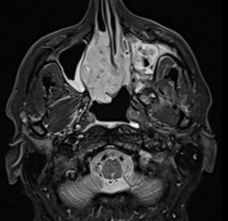
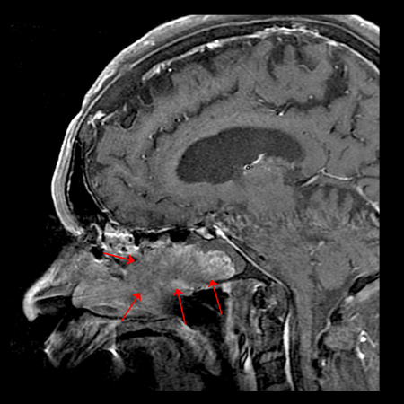
AIt is seen more often in males.(60%)
BThe primary risk factor for its development is tobacco use.(15%)
CIt primarily affects pediatric patients.(12%)
DIt is benign and has no malignant potential.(8%)
EThere is a very low recurrence rate following resection.(6%)
Your answerB
Correct answerA. It is seen more often in males.
Explanation
It is seen more often in males.
The imaging demonstrates a mass (red arrows) located in the lateral nasal wall with focal coarse calcifications, as well as bony resorption and extension into the maxillary sinus. One may also see a cerebriform pattern of enhancement on the contrast-enhanced magnetic resonance image (MRI).
This appearance is a distinguishing feature of inverted papilloma. Inverted papillomas are rare, accounting for approximately 0.5 to 4.0% of all nasal tumors.
The presentation can be similar to other sinonasal masses, with nasal obstruction, sinus pain, and epistaxis. Inverted papillomas most commonly occur on the lateral wall of the nasal cavity, where they are frequently related to the middle turbinate and maxillary ostium. As they enlarge, bony remodeling and resorption occur, which often extends into the maxillary antrum.
Incorrect Answers:
B. Tobacco use is not implicated in their development, as it is in cases of squamous cell carcinoma (SCC).
C. They are most frequently seen in patients 40 to 60 years of age, with a significant predilection for males (4:1).
D. Inverted papillomas are benign tumors but have the potential for malignant transformation, most often into squamous cell carcinoma (SCC).
E. They have a strong potential for local recurrence if incompletely resected (~20% of cases).
Q2
moderate QID 20812
Correct
A 32-year-old male patient presents with acute back pain, leg pain, and tingling. Which of the following is the most likely diagnosis?
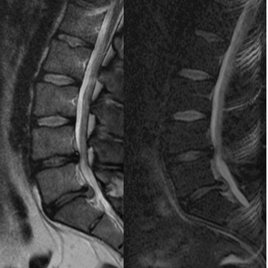
ADisc bulge(2%)
BDisc protrusion(14%)
CDisc extrusion(83%)
DDisc sequestration(1%)
EDisc desiccation(0%)
Your answerC
Correct answerC. Disc extrusion
Explanation
Disc extrusion
Terminology in reporting spinal imaging is important, as specific terms provide specific information. In this case, the imaging demonstrates a focal disc extrusion. Extrusions are typified by the presence of a herniated disc whose herniated diameter is larger than its base (yellow arrow).
The high intensity zone of T2/STIR hyperintensity represents the torn annulus through which the disc acutely extrudes (blue arrow).
Incorrect Answers:
A. Disc bulge describes a disc expansion beyond the vertebral endplates, which is greater than 25% of the disc circumference.
B. Disc protrusion describes a focal outpouching of disc with its base broader than its distal component.
D. Disc sequestration describes a detached disc fragment which has migrated either cranial or caudal from the initial site of herniation.
E. Disc desiccation describes loss of normal T2 hyperintensity within the intervertebral disc associated with degenerative loss of disc hydration.
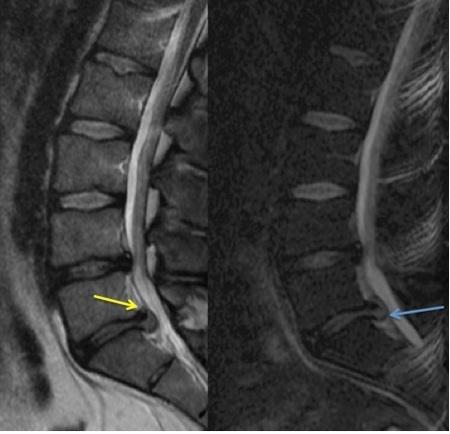
Q3
moderate QID 2914
Incorrect
The following image obtained with a gamma camera is used to measure:
AIntrinsic uniformity(6%)
BSpatial linearity(81%)
CExtrinsic uniformity(3%)
DEnergy resolution(1%)
Your answerD
Correct answerB. Spatial linearity
Explanation
Spatial linearity
The image shows a bar phantom, which is used to measure both spatial resolution and spatial linearity.
Incorrect Answers:
A. Intrinsic uniformity is measured using a point source with the collimator off to assure uniform detection by the camera.
C. Extrinsic uniformity is measured with a planar sheet source with the collimator on and should produce a uniform, homogenous image.
D. Energy resolution is the ability of the system to distinguish between different energies. Energy resolution is a calculated value obtained with a point source that emits monoenergetic spectrum (usually Tc-99m).
Q4
easy QID 56342
Correct
A 24-year-old male presents with chest pain in the emergency room. What is the diagnosis?
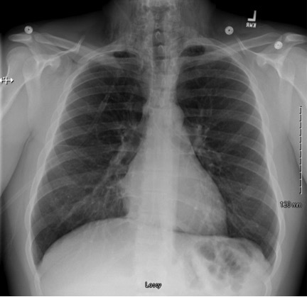
ANormal(4%)
BPneumomediastinum(90%)
CPneumothorax(3%)
DPneumonia(3%)
Your answerB
Correct answerB. Pneumomediastinum
Explanation
Pneumomediastinum
There is gas in the soft tissue of the lower neck (red arrows), and there is a continuous diaphragm sign, indicating air in the mediastinum. A chest radiograph in the same patient 6 months prior to the acute abnormality is available for comparison, which makes this somewhat subtle finding more prominent. Although the continuous diaphragm sign may be subtle, the presence of gas in the soft tissues of the neck should be detected, prompting closer evaluation. Pneumopericardium can also produce a continuous appearance of the diaphragm on chest radiograph, however this was not included as an answer choice.
Incorrect Answers:
A. Although the signs of pneumomediastinum can be subtle, there are definite abnormalities on this radiograph. Additionally, if normal is an answer choice, closely look for any abnormalities related to the other answer choices that may be subtle.
C. Pneumothorax. There is no evidence of pleural separation to suggest this diagnosis.
D. Pneumonia. Although this is the most commonly diagnosed process in the list, the lungs are well-aerated without a focal consolidation that would suggest pneumonia.
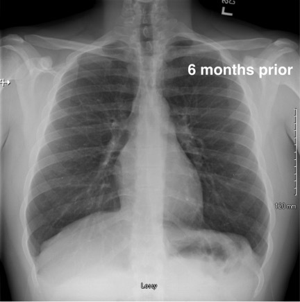
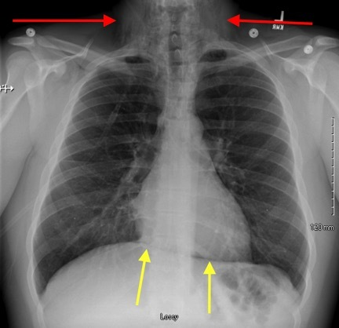
Q5
easy QID 2821
Correct
A 69-year-old female presents to her primary care physician with a 3-week history of left thigh pain. She reports no recent trauma and has no history of cancer. A femur radiograph was performed. Which of the following should the provider ask the patient next?
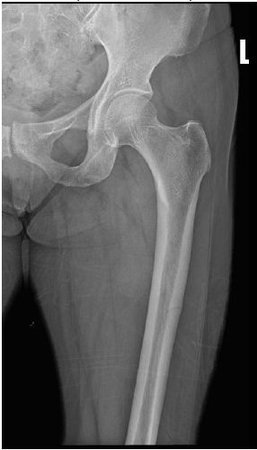
A"Are you taking a bisphosphonate?"(97%)
B"Are you taking a fluoroquinolone?"(1%)
C"Do you have a penicillin allergy?"(0%)
D"Are you using hormone replacement therapy?"(2%)
Your answerA
Correct answerA. "Are you taking a bisphosphonate?"
Vital Concept
Long-term (> 5 years) bisphosphonate use can lead to atypical femoral fractures, usually seen in the lateral cortex of the diaphysis, as in this case. Upon detection of atypical femoral fracture, bisphosphonate should be discontinued.
Explanation
"Are you taking a bisphosphonate?"
The radiograph depicts a subtle linear lucency involving the mid lateral diaphysis (arrow), compatible with atypical femoral fracture that can occur in the setting of bisphosphonate use. Atypical fractures in this context are likely the result of bisphosphonate mediated over-suppression of bone remodeling, collagen aging and unrepaired microdamage that aggregates and can ultimately present with atypical fracture. Upon detection of atypical femoral fracture, bisphosphonate should be discontinued.
Incorrect Answers:
B. Tendinopathy is among the most distinctive and best recognized adverse effect of fluoroquinolone use.
C. There is no relationship between penicillin allergy and femur fracture.
D. Hormone replacement therapy prevents osteoporosis and bone fractures.
Vital Concept: Long-term (> 5 years) bisphosphonate use can lead to atypical femoral fractures, usually seen in the lateral cortex of the diaphysis, as in this case. Upon detection of atypical femoral fracture, bisphosphonate should be discontinued.
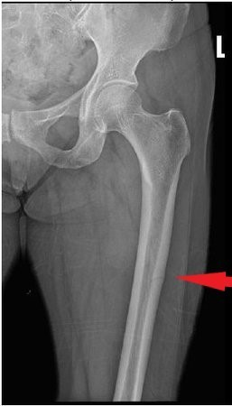
Q6
hard QID 85996
Correct
A 12-year-old male presents to clinic with a slow growing tumor on his great toe. Patient recalls injuring the toe in a soccer game several months prior to onset. It is mildly tender and solid, and not fluid-filled. Radiography would likely reveal which of the following?
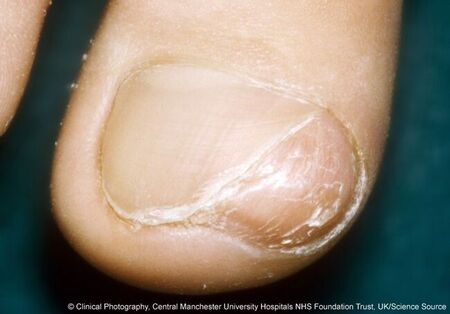
ACup-shaped radiolucent defect(25%)
BWell-circumscribed radio-opacity(60%)
CMultiple radio-opacities(3%)
DCentral radiolucent defect(11%)
EOsteoarthritis(0%)
Your answerB
Correct answerB. Well-circumscribed radio-opacity
Explanation
Well-circumscribed radio-opacity
This picture is characteristic of a subungual exostosis, a benign osteocartilaginous tumor of the distal phalanx, frequently occurring beneath the nail bed. Radiography typically reveals a well-circumscribed bony projection. They mostly affect the big toe and are predominantly found in children and young adolescents.
Incorrect Answers:
A. A cup-shaped radiolucency is characteristic of a keratoacanthoma due to its endophytic nature. Additionally, an epidermal inclusion cyst could produce a well-circumscribed lytic focus.
C. Multiple radio-opacities would not be characteristic of this solitary nodule, and can be due to a number of etiologies.
D. A central radiolucency is characteristic of an enchondroma. These tumors are the most common tumor of the hand, however, they are typically not preceded by trauma or infection.
E. This is not a Heberden’s node, which typically overlies a joint.
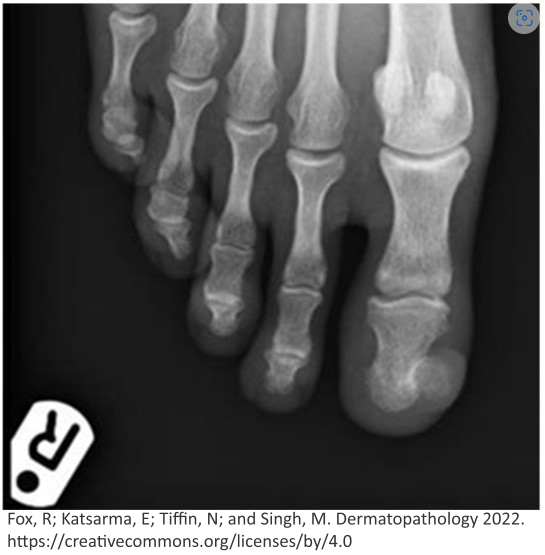
Q7
easy QID 21580
Correct
A 23-year-old male patient presents with progressive dyspnea on exertion. Which of the following is the most likely diagnosis?
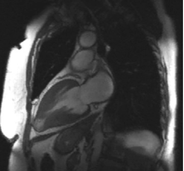
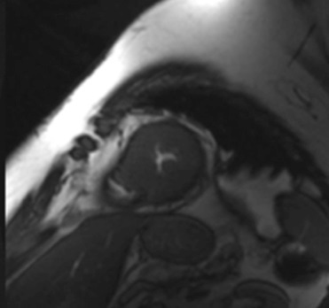
AHypertrophic cardiomyopathy(97%)
BIschemic cardiomyopathy(1%)
CViral myocarditis(0%)
DSystemic hypertension(1%)
ERestrictive cardiomyopathy(1%)
Your answerA
Correct answerA. Hypertrophic cardiomyopathy
Explanation
Hypertrophic cardiomyopathy
Hypertrophic cardiomyopathy (HCM) is an autosomal dominant genetic cardiac disease that results in marked hypertrophy of the myocardium leading to a nondilated, thickened left ventricle (red arrows) seen here on these long axis (bottom image) and short-axis (top image) T2 weighted cardiac MRIs. It may result in associated obstruction of the left ventricular outflow tract by the markedly thickened interventricular septum. The most common diagnostic criteria is a thickening of the left ventricle (LV) wall greater than 15 mm. Obesity and maternal diabetes are contributory factors.
On delayed contrast-enhanced studies, there is typically delayed enhancement which may be a diffuse or focal mid-myocardial enhancement. These patients frequently present with sudden cardiac death during physical activity related to arrhythmia and/or acute left ventricular outflow tract obstruction related to septal hypertrophy and hyperdynamic contraction.
Incorrect Answers:
B. In ischemic cardiomyopathy, one would expect to see sequelae of myocardial infarction and thinned myocardium. In the setting of infarction, myocardial delayed enhancement (MDE) develops in coronary artery territorial pattern with the subendocardial myocardium first affected and then extending toward the epicardium. The thickness of MDE is prognostic of viability after revascularization. Typically, if < 50% of the myocardium is affected, there is a good prognosis for viability after reperfusion. If > 50% is affected, the patient may be managed medically rather than revascularized.
C. Viral myocarditis typically produces patchy subepicardial and mid-myocardial delayed enhancement on post-contrast imaging of the heart. The marked thickening of the ventricle seen in this case is not characteristic of viral myocarditis.
D. Systemic hypertension is the most common cause of concentric myocardial hypertrophy. However, it is most frequently seen in older adult populations as a result of severe longstanding hypertension. Additionally, the sparing of the cardiac apex seen in this case would not be expected in hypertrophy related to hypertension.
E. Restrictive cardiomyopathy is characterized by diastolic dysfunction in the setting of fibrotic replacement of myocardial tissue following a systemic illness such as sarcoidosis, amyloidosis, hemochromatosis, or following chemotherapy. On perfusion MRI, look for thickened myocardium with delayed myocardial enhancement.
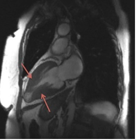
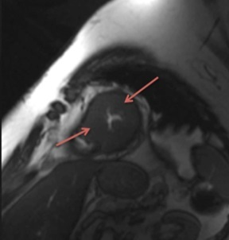
Q8
hard QID 41451
Incorrect
A radiation worker is handling a shipment of radiopharmaceuticals with the label below. After appropriately storing the radioactive material (with no spills and no contamination of the container), how should the radiation worker dispose of the empty container?
AIt should be placed in isolation for a time period of at least 5 half-lives prior to being moved to an unrestricted area.(21%)
BThe container does not need special handling and can be placed in garbage in an unrestricted area as-is.(2%)
CThe container can be recycled within the restricted space of the nuclear medicine department with the label as-is.(5%)
DThe worker should remove or deface radioactive material labels prior to disposal in an unrestricted area.(66%)
EThe empty container should be returned to its sender for re-use.(6%)
Your answerA
Correct answerD. The worker should remove or deface radioactive material labels prior to disposal in an unrestricted area.
Explanation
The worker should remove or deface radioactive material labels prior to disposal in an unrestricted area.
Adequate information must be available to workers to enable them to handle radioactive materials safely, minimize exposure, and ensure that the proper material is administered to all patients. When transferring an empty container previously containing a radioactive substance from a restricted to an unrestricted area, it is important to remove or deface radioactive material labels on empty uncontaminated containers. If it is found in the public domain, these labels may cause undue alarm on the part of the public and have an impact on the radiation safety resources of licensees and regulatory agencies.
Incorrect Answers:
A. The container is not radioactive, thus it is not necessary to place it in isolation.
B. Disposing of the container in an unrestricted garbage area or in a restricted zone recycling canister with the label intact is not an acceptable method of disposing of radioactive material packaging.
C. The label does not need to be in the nuclear medicine department.
E. Returning an empty container with a radioactive label is incorrect, as this may cause undue alarm on the part of the public and have an impact on the radiation safety resources of licensees and regulatory agencies.
Q9
easy QID 12295
Correct
A 54-year-old male came to the ER after a car accident and was in a coma. Which of the following is the most likely diagnosis given the findings on the brain DWI and GRE images shown?
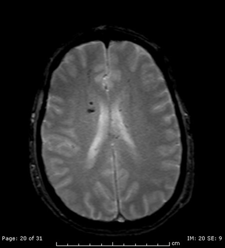
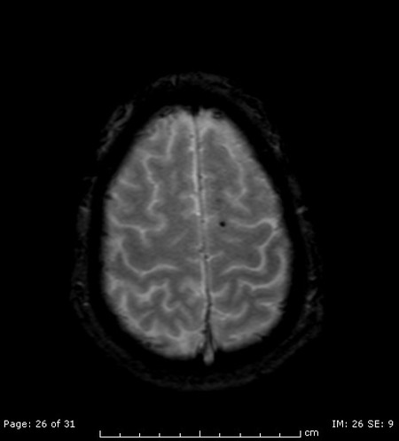
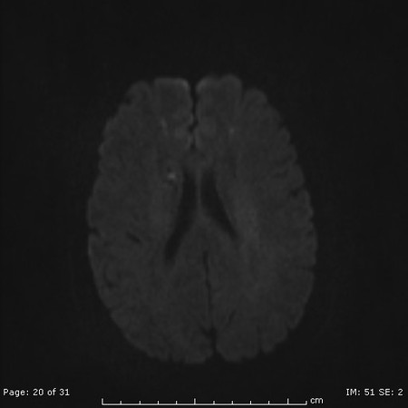
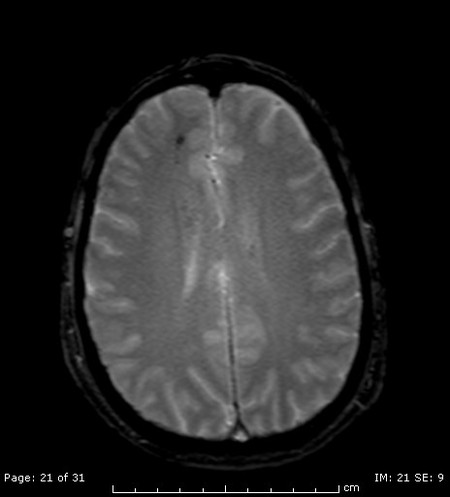
AEmbolic infarcts(2%)
BDiffuse axonal injury(96%)
CBrain contusions(1%)
DBrain abscesses(0%)
Your answerB
Correct answerB. Diffuse axonal injury
Vital Concept
Diffuse axonal injury shows characteristic microhemorrhages at gray-white matter junctions on GRE and SWI sequences. These hemorrhagic lesions appear as hypointense foci in corpus callosum, brainstem, and subcortical white matter. SWI is most sensitive for detecting these paramagnetic blood products.
Explanation
Diffuse axonal injury
This is a classic presentation of DAI that occurs as a form of closed brain injury secondary to rotational forces and shear injury at the gray-white matter junction. When hemorrhagic, as seen in this case, they present with areas of susceptibility artifacts on the GRE sequence. It can be non-hemorrhagic and then it will present only with increased signal on T2/FLAIR. This can be very challenging to diagnose on CT.
Incorrect Answers:
A. Embolic infarcts occur secondary to multiple emboli in different vascular distributions, usually of cardiac origin. They affect the terminal cortical branches and tend to present as wedge-shaped cortical areas of restricted DWI with increased T2/FLAIR signal.
C. Brain contusions tend to involve the gray matter in the inferior frontal lobe and anterior temporal lobe areas. They present with heterogeneous T2 and FLAIR signal and can hemorrhage.
D. Brain abscesses, even though they have increased DWI signal, will not show the degree of susceptibility seen here on the GRE sequence. A rim-enhancing abscess will be seen on post-contrast studies.
Vital Concept: Diffuse axonal injury shows characteristic microhemorrhages at gray-white matter junctions on GRE and SWI sequences. These hemorrhagic lesions appear as hypointense foci in corpus callosum, brainstem, and subcortical white matter. SWI is most sensitive for detecting these paramagnetic blood products.
Q10
moderate QID 39326
Correct
In response to a surgeon’s request for a CT scan to confirm cholecystitis, the radiologist declines, saying that cholecystitis was already confirmed with a previous ultrasound. Which of the following professional responsibilities is the radiologist most likely exemplifying?
ACommitment to a just distribution of finite resources(89%)
BCommitment to improving access to care(1%)
CCommitment to maintaining trust by managing conflicts of interest(1%)
DCommitment to professional responsibilities(8%)
ECommitment to scientific knowledge(2%)
Your answerA
Correct answerA. Commitment to a just distribution of finite resources
Explanation
Commitment to a just distribution of finite resources
The radiologist’s attempt to prevent an unnecessary and superfluous test signifies their commitment to a just distribution of finite resources. Physicians should practice medicine that is based on wise and cost-effective management of limited clinical resources. This involves avoiding unnecessary tests and procedures that would otherwise expose patients to avoidable harm and expenses.
Incorrect Answers:
B. Improving access to care is a key professional responsibility. Physicians should be dedicated to making uniform and quality health care available by eliminating access barriers based on education, laws, finances, geography, or social discrimination. Improving access to care also involves health advocacy and the promotion of public health.
C. Managing conflicts of interest is a key professional responsibility. Physicians must take care to avoid exposing themselves and their patients to situations that unnecessarily compromise patient care for personal gain. Physicians have a professional and ethical obligation to publicly disclose conflicts of interest that arise over the course of their professional careers.
D. Commitment to the medical profession is a key professional responsibility. Physicians should commit themselves to collaborating with other health care professionals in order to maximize patient care, participate in self-regulation of the profession, and create and implement standards that will be followed by current and future members of the profession.
E. Scientific knowledge is a key professional responsibility. Physicians must adhere to and practice scientific standards in their medical practice, in addition to promoting research and discovering new knowledge that can be beneficially employed by members of the profession. Physicians must protect the integrity of scientific knowledge with scientific evidence and medical experience.
Q11
easy QID 2881
Correct
Meckel's diverticulum follows the "rules of 2": 2:1 male-to-female ratio, commonly occurs before the age of 2, contains 2 types of tissue (gastric and pancreatic), is within 2 feet of the ileocecal valve, and 2 inches in length. Which of the following is a Meckel's diverticulum a remnant of?
AVitelline or omphalomesenteric duct(99%)
BMesonephric or Wolffian duct(1%)
CParamesonephric or Müllerian duct(0%)
DUreteric bud or metanephric duct(0%)
ECommon bile duct(0%)
Your answerA
Correct answerA. Vitelline or omphalomesenteric duct
Vital Concept
Meckel's diverticulum represents persistence of the ileal end of the omphalomesenteric duct, which explains its characteristic antimesenteric location and separate vascular supply—features that distinguish it from acquired diverticulosis and help in imaging diagnosis.
Explanation
Vitelline or omphalomesenteric duct
Meckel's diverticulum is a remnant of the vitelline or omphalomesenteric duct. The vitelline duct connects the yolk sac to the midgut in the developing embryo. It typically involutes by the ninth week of gestation. When it does not, it persists on the antimesenteric edge of the small bowel as a Meckel's diverticulum, fistula or fibrous band to the umbilicus, or an umbilical cyst. There may be pancreatic or gastric mucosa within a Meckel's diverticulum. Meckel's diverticulum may present with gastrointestinal bleeding or bowel obstruction (such as when it serves as a lead point for intussusception).
Incorrect Answers:
B. Part of the urogenital system. Gives rise to parts of the male reproductive system such as seminal vesicles, vas deferens and epididymis.
C. Part of the urogenital system. Gives rise to parts of the female reproductive system such as fallopian tubes, uterus and upper vagina.
D. Gives rise to the renal collecting system.
E. Common bile duct is not associated with Meckel's.
Vital Concept: Meckel's diverticulum represents persistence of the ileal end of the omphalomesenteric duct, which explains its characteristic antimesenteric location and separate vascular supply—features that distinguish it from acquired diverticulosis and help in imaging diagnosis.
Q12
easy QID 56292
Correct
Other than the sacrum, what is the most common primary site of occurrence of chordomas?
ASkull base/clivus(92%)
BCervical vertebrae(3%)
CThoracic vertebrae(1%)
DLumbar vertebrae(3%)
Your answerA
Correct answerA. Skull base/clivus
Explanation
Skull base/clivus
Approximately 85% of all chordomas occur within the skull base/clivus or sacrum, with ~50% arising from the sacrum and ~35% arising from the skull base/clivus. However, chordomas can occur anywhere along the neuraxis. Chordomas are tumors composed of nests of cells originating from the embryonic notochord. The age group for clival chordomas is typically 20-30 years whereas the sacral age cohort is slightly older at 50-60 years. The clivus refers to the downward sloping portion of the central skullbase anterior to the foramen magnum and behind the dorsum sella. It is composed of the sphenoid and occipital bones.
Incorrect Answers:
B. Cervical vertebrae are the third most common site of primary occurrence, after the sacrum and skull base.
C. Thoracic vertebrae are the least common site of primary occurrence.
D. Lumbar vertebrae are the fourth most common site of primary occurrence, after the skull base, sacrum and cervical vertebrae.
Q13
moderate QID 21124
Correct
A 69-year-old male patient presents with an incidental finding on routine abdominal CT for follow-up of bladder malignancy. Which of the following is the diagnosis?
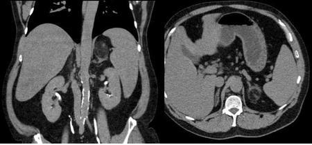
AMyelolipoma(89%)
BAngiomyolipoma (AML)(8%)
CAdrenocortical carcinoma(0%)
DAdenoma(3%)
EMetastasis(0%)
Your answerA
Correct answerA. Myelolipoma
Explanation
Myelolipoma
Myelolipoma is a fatty lesion of the adrenal gland that can be suggested by the presence of macroscopic fat, i.e., fat density on CT examination, high signal on T1 weighted images, or loss of signal on fat-suppressed imaging. This lesion demonstrates a clear claw sign with the adrenal gland (red arrow) indicating its organ of origin. Myelolipoma is not suggested when there is a loss of signal on opposed phase imaging. If CT can demonstrate macroscopic fat within the lesion, no further imaging may be necessary. However, if there are questions, MRI can be performed for further evaluation.
Incorrect Answers:
B. Angiomyolipoma (AML) should be suggested when there is detectable macroscopic fat signal or density within a renal mass. While there occasionally are angiomyolipomas in other organs, such as the adrenal gland, this is a rare occurrence, and another diagnosis should be offered.
C. Adrenocortical carcinoma should be suggested when there is an enhancing adrenal mass that does not fit the criteria of adenoma on an adrenal washout study. Typically, adrenocortical carcinomas, unless functional, are heterogenous and large at detection with prominent internal necrosis and calcification. When functional, they may be smaller at detection due to symptoms produced from hormone synthesis.
D. Adenoma can be suggested when there is a low-density adrenal mass with density less than 10 HU on a noncontrast study (threshold values may vary from institution to institution), absolute washout of > 60%, relative washout of > 40%, or when there is loss of signal on opposed-phase MRI.
E. Metastasis should be suggested in the presence of an enhancing adrenal mass that does not fit the criteria of adenoma on an adrenal washout study. In the absence of another known malignancy, metastasis is less likely (though should not be excluded if there is clinical suspicion).
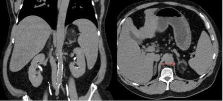
Q14
hard QID 2961
Correct
A 70-year-old male undergoes a chest CT for staging of biopsy-proven pulmonary squamous cell carcinoma. The patient has a history of COPD, hypertension, and gastroesophageal reflux. He has a 50-year smoking history. There is no personal or family history of cancer. Evaluation of the CT demonstrates a malignant-appearing mass in the right lung measuring 4.8 cm. There are several enlarged ipsilateral paratracheal and subcarinal lymph nodes identified. Assuming there are no distant metastases, which of the following correctly describes the TNM stage of this patient's malignancy?
AT2aN2aM0(16%)
BT2bN2bM0(44%)
CT2aN2bM0(15%)
DT2bN2bM1(21%)
ET2bN3M0(3%)
Your answerB
Correct answerB. T2bN2bM0
Vital Concept
The 9th edition of the International Association for the Study of Lung Cancer TNM staging criteria for non-small cell lung cancer subdivides N2 into N2a (single ipsilateral mediastinal/subcarinal station) versus N2b (multiple ipsilateral mediastinal/subcarinal stations). This change emphasizes counting the number of affected lymph node stations rather than total number of lymph nodes involved. The N2b designation generally results in higher stage classifications compared to N2a, reflecting worse prognosis with multi-station involvement and impacting treatment decisions including surgical respectability.
Explanation
T2bN2bM0
The 9th edition of the International Association for the Study of Lung Cancer TNM staging criteria for non-small cell lung cancer is summarized in the provided reference article. Since the primary mass is between 4 and 5 cm in greatest dimension, its T score meets criteria for T2b. Involvement of ipsilateral paratracheal and subcarinal lymph nodes is compatible with N2b disease. Absence of distant metastases is compatible with M0.
Incorrect Answers:
A. The tumor is between 4 to 5 cm (4.8) which is consistent with T2b. Involvement of ipsilateral paratracheal and subcarinal lymph nodes is compatible with N2b disease. Involvement of a single mediastinal/subcarinal lymph node station would be compatible with N2a.
C. The tumor is between 4 to 5 cm (4.8) which is consistent with T2b.
D. There are no distant metastases (M0)
E. The tumor is between 4 to 5 cm (4.8) which is consistent with T2b, but there is no supraclavicular, scalene, or contralateral mediastinal/hilar node involvement to support N3 disease.
Vital Concept: The 9th edition of the International Association for the Study of Lung Cancer TNM staging criteria for non-small cell lung cancer subdivides N2 into N2a (single ipsilateral mediastinal/subcarinal station) versus N2b (multiple ipsilateral mediastinal/subcarinal stations). This change emphasizes counting the number of affected lymph node stations rather than total number of lymph nodes involved. The N2b designation generally results in higher stage classifications compared to N2a, reflecting worse prognosis with multi-station involvement and impacting treatment decisions including surgical respectability.
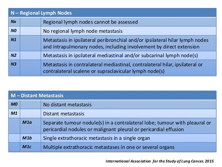
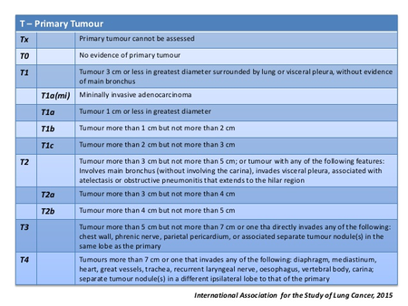
Q15
hard QID 22583
Correct
A 3-year-old female patient presents with worsening headache, nausea, and vomiting. Which of the following is the most likely diagnosis?
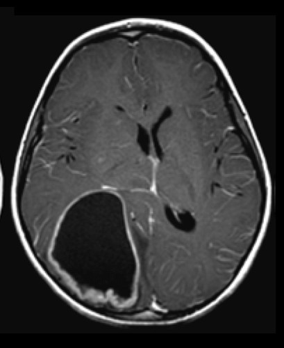
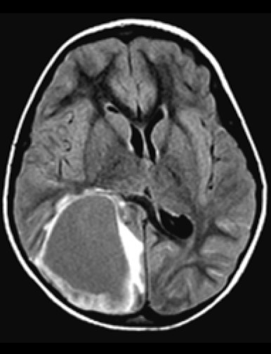
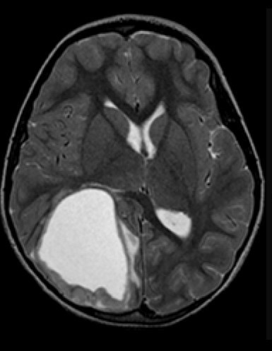
AGlioblastoma multiforme (GBM)(8%)
BChoroid plexus papilloma(11%)
CChoroid plexus carcinoma(10%)
DSupratentorial ependymoma(52%)
EOligodendroglioma(19%)
Your answerD
Correct answerD. Supratentorial ependymoma
Vital Concept
Supratentorial ependymomas are predominantly extraventricular, arising within cerebral hemisphere parenchyma. They appear more heterogeneous than infratentorial ependymomas with greater tendency for cyst formation, calcifications, and hemorrhage. They are typically large at presentation with mixed enhancement patterns.
Explanation
Supratentorial ependymoma
Supratentorial ependymomas are WHO grade II or III lesions arising from ependymal cells near the ventricles or ependymal rests within the brain parenchyma. They may be seen in younger children, albeit in an older demographic than that of posterior fossa ependymomas. They are characteristically heterogeneous in appearance with hemorrhage and calcification, located classically in the parenchyma of the frontal lobes, but may also be temporo-parietal in location. They typically have a mild amount of surrounding edema (yellow arrows – more conspicuous on FLAIR) and are markedly hyperintense on T2WI (blue arrow) due to cystic internal components. They may enhance heterogeneously, with enhancement noted at the margins of the cystic components (red arrow). WHO grade I lesions are characterized as myxopapillary ependymomas, while WHO grade II lesions are typically cellular types, and WHO grade III are classified as anaplastic ependymomas.
Incorrect Answers:
A. Glioblastoma multiforme (GBM) is a WHO grade IV malignant tumor composed of astrocytes and is the most common malignant intracranial neoplasm in adult patients. It is characterized by a thick enhancing periphery of the tumor mass with internal necrosis. Surrounding edema represents infiltrative tumor extension. Frequently, they cross the midline via the corpus callosum (“butterfly glioma”). In children, GBM more frequently involves posterior fossa structures and the brainstem. While GBM's are often cystic/centrally necrotic the degree of enhancement and wall architecture tend to be more heterogeneous. There would also be a much larger degree of peritumoral T2 white matter signal increase compared to this case.
B and C. Choroid plexus papillomas are WHO grade I neoplasms arising from choroid plexus epithelial cells. Typically, they are intraventricular in location and markedly enhanced with strikingly lobulated margins. They are usually isodense or hyperdense to cerebral tissue and may have calcifications. On MR imaging, they are iso- to hypointense on T1WI and iso- to hyperintense on T2WI with marked enhancement on post-contrast imaging. They are frequently associated with hydrocephalus. They are most commonly located at the atrium of the lateral ventricles (about 50%), with about 40% within the fourth ventricle, and a much smaller proportion in the roof of the third ventricle. Choroid plexus papillomas are notoriously difficult to distinguish from choroid plexus carcinomas on imaging, such that they are often followed over long periods of time for evidence of invasion. Often, definitive diagnosis may only be made on pathologic analysis. Heterogeneity of enhancement and increasing edema along the adjacent brain parenchyma may be the only imaging features to suggest invasive choroid plexus carcinoma. However, these are inconsistent at best. This mass is more cystic rather than solid/lobulated soft tissue that one would see with choroid plexus papilloma/carcinoma.
E. Oligodendroglioma is the most common calcified supratentorial mass lesion in adult patients. It is a WHO grade II lesion composed of differentiated oligodendrocytes. Typically, they enhance heterogeneously and are partially calcified and located within the cerebral hemispheres (particularly the frontal lobes). They may have mild associated edema. They rarely are hemorrhagic unless they are anaplastic (WHO grade III).
Vital Concept: Supratentorial ependymomas are predominantly extraventricular, arising within cerebral hemisphere parenchyma. They appear more heterogeneous than infratentorial ependymomas with greater tendency for cyst formation, calcifications, and hemorrhage. They are typically large at presentation with mixed enhancement patterns.
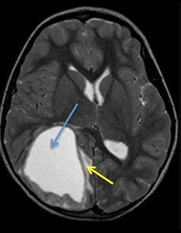
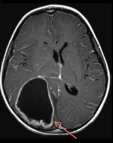
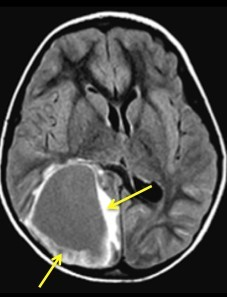
Q16
moderate QID 56275
Correct
Which of the following is most associated with increased risk/severity of complications for the entity shown?
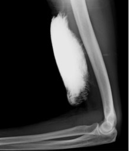
AInability of patient to communicate symptoms.(88%)
BLine requiring hand injection (versus power injection).(4%)
CNo prior history of intravenous (IV) chemotherapy administration.(0%)
DLarge bore peripheral intravenous line or central venous line.(7%)
Your answerA
Correct answerA. Inability of patient to communicate symptoms.
Vital Concept
The inability of patients to communicate signs and symptoms related to contrast extravasation are associated with increased volume of extravasated contrast and higher risk of compartment syndrome.
Explanation
Inability of patient to communicate symptoms.
The image depicts contrast extravasation in the upper arm. The inability of patients to communicate signs and symptoms related to contrast extravasation such as burning, swelling, tightness, and pain are associated with increased volume of extravasated contrast and increased risk of associated complications. Compartment syndrome, the most severe consequence of contrast extravasation, is more likely after large extravasations.
Incorrect Answers:
B. Hand injections are typically associated with a much lower incidence of severe extravasation since the healthcare provider is directly observing the injection in real time.
C. Prior intravenous chemotherapy administration results in sclerosis and weakening of the peripheral veins, which can increase complications from extravasation.
D. Large-bore central intravenous lines are typically placed in larger veins that can more easily accommodate high flow rates and volumes associated with contrast injections.
Vital Concept: The inability of patients to communicate signs and symptoms related to contrast extravasation are associated with increased volume of extravasated contrast and higher risk of compartment syndrome.
Q17
easy QID 22444
Correct
A 41-year-old otherwise-healthy patient presents with chest pain. Cardiac examination and ECG are unremarkable. A transthoracic echocardiogram demonstrates normal findings. A coronary CT angiogram is performed. Which of the following is the likely etiology of this patient’s symptoms?
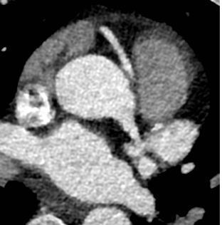
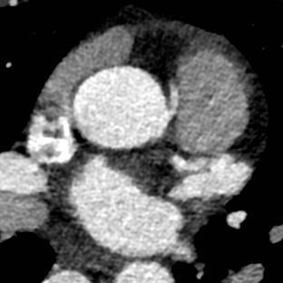
AInter-arterial course of the right coronary artery (RCA)(90%)
BSubpulmonic course of the RCA(5%)
COrigin of right coronary artery from the pulmonary artery(5%)
DLeft coronary artery dominance(0%)
Your answerA
Correct answerA. Inter-arterial course of the right coronary artery (RCA)
Vital Concept
An inter-arterial course of the RCA is an uncommon anatomic variant thought to be associated with an increased risk of cardiac ischemia. It is sometimes known as the “malignant course of the right coronary artery.”
Explanation
Inter-arterial course of the right coronary artery (RCA)
This patient without risk factors presenting with chest discomfort should be assessed for structural abnormalities. Computed tomography angiography (CTA) is an excellent tool for risk stratification and diagnosis of coronary disease as well as identification of certain structural pathology. In this case, the right coronary artery is seen coursing between the pulmonary artery and the aorta. This is a high-risk findings that can be associated with the development of ischemia and sudden cardiac death in severe cases. In this patient, the presence of ischemia should be confirmed with exertion, and if present, surgery should be performed.
Incorrect Answers:
B. D. These arterial courses are thought to be benign. Concerning features include an acute-angle take-off, a slit-like origin, an intramural course (the artery coursing within the wall of the aorta), or the anomalous coronary artery being the dominant coronary artery.
C. Neither coronary artery arises from the pulmonary artery.
Vital Concept: An inter-arterial course of the RCA is an uncommon anatomic variant thought to be associated with an increased risk of cardiac ischemia. It is sometimes known as the “malignant course of the right coronary artery.”
Q18
easy QID 2956
Correct
Which of the following findings does the image reveal?
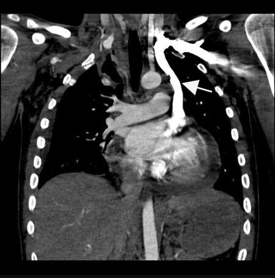
AAberrant right subclavian artery(0%)
BPersistent left superior vena cava(98%)
CAnomalous origin of the left pulmonary artery(0%)
DIdiopathic dilatation of the pulmonary trunk(0%)
EAberrant left subclavian artery(1%)
Your answerB
Correct answerB. Persistent left superior vena cava
Vital Concept
Persistent left superior vena cava (PLSVC) appears as a tubular vascular structure coursing along the left side of the mediastinum from the junction of left subclavian and internal jugular veins, traveling adjacent to the aortic arch, and typically draining into the right atrium via the coronary sinus. The pathognomonic imaging finding is coronary sinus dilatation without evidence of right heart congestion, which serves as the key radiologic clue suggesting PLSVC presence on cross-sectional imaging.
Explanation
Persistent left superior vena cava
A left-sided superior vena cava is the most common congenital venous anomaly in the chest. It is only rarely identified in isolation, as the majority are accompanied by a normal right-sided superior vena cava. This finding is termed duplication. A left-sided superior vena cava forms when the left anterior cardinal vein is not obliterated during fetal development. The vessel passes anterior to the left hilum and lateral to the aortic arch before rejoining the circulatory system. The vessel may drain into the coronary sinus or left atrium. The majority of cases are asymptomatic, and the presence of the vessel is identified incidentally. If a right-to-left shunt is present as a result of drainage directly into the left atrium, it may rarely cause cyanosis. On plain radiographs, direct visualization of the vessel is not possible; however, its presence can be implied if a catheter lies in unexpected left paramediastinal location. CT with contrast demonstrates the anomalous vessel coursing inferiorly to the left of the arch of the aorta and anterior to the left hilum.
Incorrect Answers:
A. The most common aortic arch anomaly is an aberrant right subclavian artery that originates from an otherwise normal left-sided aortic arch. The aberrant right subclavian artery arises from the posterior portion of the aortic arch and crosses the mediastinum obliquely from left to right, posterior to the esophagus and trachea. Associated conditions include dilatation of the origin of the right subclavian artery, called a Kommerell diverticulum, and absence of the left recurrent laryngeal nerve. Lateral chest radiography can be normal, or the anomalous artery often manifests as an area of increased opacity with a focal indentation on the posterior wall of the trachea. Posteroanterior chest radiography reveals an obliquely oriented soft-tissue area of increased opacity that extends superiorly to the right from the superior margin of the aortic arch.
C. In rare cases, the left pulmonary artery may arise from the posterior aspect of the right pulmonary artery and pass between the trachea and esophagus to the left hilum. When this occurs, the left pulmonary artery forms a sling around the distal trachea and the proximal right main bronchus. Patients with this abnormality fall into one of two groups. The first group of patients have a normal bronchial pattern and are relatively asymptomatic. In the second group, patients have one or more malformations of the bronchotracheal tree and cardiovascular system. In this group, mortality and morbidity are high during infancy. A pulmonary artery sling may mimic a mediastinal mass on chest radiographs, and its path can be traced definitively using CT or MRI.
D. Idiopathic dilatation of the pulmonary trunk is a rare congenital enlargement of the pulmonary trunk with or without dilatation of the right and left pulmonary arteries. It is a diagnosis of exclusion, and pulmonary and cardiac diseases must be first ruled out and the presence of normal pressure in the right ventricle and pulmonary artery must be confirmed. Patients are asymptomatic, and the anomaly is detected incidentally. On chest radiographs, the enlargement of the main pulmonary artery produces a rounded bulge that may mimic a mass in the left mediastinal border.
E. A right-sided aortic arch anomaly with an aberrant left subclavian artery is usually diagnosed incidentally, although it may cause dysphagia. Radiography demonstrates the absence of a left-sided aortic arch and a well-defined soft-tissue area of increased opacity in the right paratracheal region. Lateral radiography typically reveals a mass-like area of increased opacity in the retrotracheal space. CT and MR imaging both can confirm the diagnosis and differentiate it from a right-sided aortic arch with mirror image branching and a double aortic arch.
Vital Concept: Persistent left superior vena cava (PLSVC) appears as a tubular vascular structure coursing along the left side of the mediastinum from the junction of left subclavian and internal jugular veins, traveling adjacent to the aortic arch, and typically draining into the right atrium via the coronary sinus. The pathognomonic imaging finding is coronary sinus dilatation without evidence of right heart congestion, which serves as the key radiologic clue suggesting PLSVC presence on cross-sectional imaging.
Q19
hard QID 37581
Correct
Working as a team member and at times as a leader is an example of which one of the six core competencies of maintenance of certification?
APatient care(0%)
BMedical knowledge(0%)
CInterpersonal and communication skills(70%)
DProfessionalism(10%)
ESystems-based practice(14%)
FPractice-based learning and improvement(5%)
Your answerC
Correct answerC. Interpersonal and communication skills
Vital Concept
Interpersonal and Communication Skills is the core competency requiring physicians to work effectively both as team members and as leaders when needed.
Explanation
Interpersonal and communication skills
Interpersonal and communication skills are the first of the six core competencies of maintenance of certification. Demonstration of these skills result in effective information exchange and teaming with patients, their families, and professional associates (e.g., fostering a therapeutic relationship that is ethically sound and uses effective listening skills with nonverbal and verbal communication; working as both a team member and at times as a leader).
Incorrect Answers:
A. In patient care, one provides care that is compassionate, appropriate, and effective treatment for health problems and to promote health.
B. Using medical knowledge, one is able to demonstrate knowledge about established and evolving biomedical, clinical, and cognate sciences and their application in patient care.
D. Professionalism means demonstrating a commitment to carrying out professional responsibilities, adherence to ethical principles, and sensitivity to diverse patient populations.
E. In using systems-based practice, one demonstrates awareness of and responsibility to larger contexts and systems of health care. One must be able to call on system resources to provide optimal care (e.g., coordinating care across sites or serving as the primary case manager when care involves multiple specialties, professions, or sites).
F. Practice-based learning and improvement requires one to investigate and evaluate patient care practices, appraise and assimilate scientific evidence, and improve the practice of medicine.
Vital Concept: Interpersonal and Communication Skills is the core competency requiring physicians to work effectively both as team members and as leaders when needed.
Q20
moderate QID 37414
Correct
A 46-year-old female patient presented for initial screening mammography, which showed the below finding. Which of the following correctly states the Bi-RADS classification?
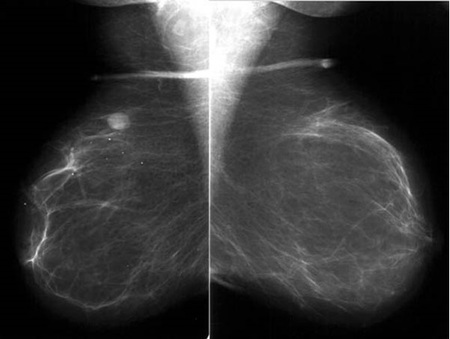
ABiRADS 0(82%)
BBiRADS 1(0%)
CBiRADS 2(10%)
DBiRADS 3(5%)
EBiRADS 4(2%)
Your answerA
Correct answerA. BiRADS 0
Vital Concept
BI-RADS 0 indicates an incomplete study requiring additional imaging evaluation before final assessment, typically assigned at screening mammography when findings need diagnostic workup.
Explanation
BiRADS 0
The mammogram below shows a mass in the posterior superior right breast and some probable axillary lymph nodes (green arrows) with no other breast abnormality. This is an indeterminate and incomplete finding that requires further evaluation, a BIRADS 0 designation.
Incorrect Answers:
B. BiRADS 1 is used for a negative exam.
C. BiRADS 2 is used for benign findings. This is a "normal" assessment in which the interpreter chooses to describe a benign finding in the mammography report.
D. BiRADS 3 indicates a probable benign finding for which short interval follow-up is recommended. This should have a less than 2% chance of malignancy.
E. BiRADS 4 indicates a suspicious finding for which biopsy should be considered. This is a broad category that spans from 2-95% chance of malignancy. This is further broken down into categories 4A, 4B, and 4C.
Vital Concept: BI-RADS 0 indicates an incomplete study requiring additional imaging evaluation before final assessment, typically assigned at screening mammography when findings need diagnostic workup.
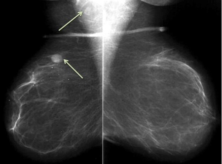
Q21
hard QID 21108
Correct
A 55-year-old male patient undergoes magnetic resonance (MR) enterography with the images shown below. There are no skip lesions, flow-limiting strictures, abscess or fistula otherwise identified on this exam. Which of the following is the most likely explanation for the findings denoted by the arrows?
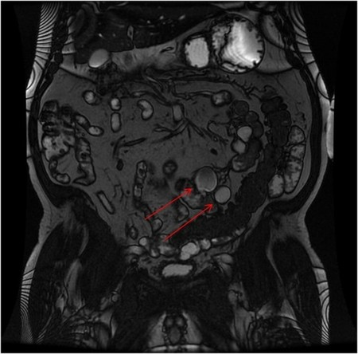
ACrohn’s disease(8%)
BSmall bowel diverticulosis(67%)
CColonic diverticulosis(3%)
DMeckel’s diverticulum(5%)
EPeutz-Jeghers syndrome(17%)
Your answerB
Correct answerB. Small bowel diverticulosis
Explanation
Small bowel diverticulosis
The images show numerous diverticula arising from the small bowel (red arrows). Small bowel diverticula are saccular outpouchings of small bowel mucosa and submucosa adjacent to the vasa recta perforation of the muscularis propria.
They may be completely asymptomatic or can become complicated by diverticulitis, perforation, hemorrhage, or malabsorption related to stasis and bacterial overgrowth in the setting of multiple small bowel diverticula.
Incorrect Answers:
A. Crohn’s disease is characterized by multifocal transmural inflammation (skip lesions) throughout the gastrointestinal tract, which may produce stricturing, fistulization, and abscesses. Obstruction can occur proximal to sites of stricturing, which could mimic a small bowel diverticulum.
C. These loops are not colonic. They are small bowel loops and the pouches are suggestive of diverticulosis
D. Meckel’s diverticula are a persistent outpouching due to a noninvoluting omphalomesenteric (vitelline) duct. Approximately 50% of them will contain ectopic gastric mucosa, which accumulates tracer inTc99m pertechnetate nuclear medicine exams. They are supplied by a vitelline artery.
Remember the rule of 2’s when thinking about Meckel’s diverticula: 2% prevalence, 2 inches long, within 2 feet of the ileocecal valve, and becomes symptomatic before age 2.
E. Peutz-Jegher syndrome is a hereditary polyposis syndrome that produces hamartomatous polyps of the small bowel and less frequently the colon and stomach, which are not themselves premalignant. Additional findings include abnormal mucocutaneous pigmentation, particularly involving the oral mucosa.
Q22
hard QID 47110
Correct
Which of the following statements regarding carotid artery plaques is true?
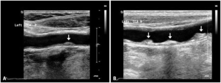
AFigure 1 (A) demonstrates a moderate to large amount of heterogeneous multiple plaques with focal calcification and irregular surface, in mid-CCA.(7%)
BFigure 1 (B) shows a small amount of smooth homogenous plaque located on the far wall of the proximal common carotid artery (CCA).(31%)
CTraditional risk factors like the Framingham Risk Score are not always correlated with the development of cardiovascular events.(38%)
DCarotid plaque area, determined by the sum cross-sectional area of all carotid plaques, has not been identified as an independent predictor of future cardiovascular risk.(24%)
Your answerC
Correct answerC. Traditional risk factors like the Framingham Risk Score are not always correlated with the development of cardiovascular events.
Vital Concept
Carotid plaque appears as echogenic, hypoechoic, or heterogeneous deposits causing luminal narrowing on ultrasound, with hypoechoic plaques being more unstable. Framingham Risk Score limitations include not incorporating carotid plaque burden or morphology that ultrasound can detect for improved cardiovascular risk stratification.
Explanation
Traditional risk factors like the Framingham Risk Score are not always correlated with the development of cardiovascular events.
Traditional risk factors like the Framingham Risk Score are not always correlated with the development of cardiovascular events. Researchers have sought for new imaging techniques for the detection of subclinical atherosclerosis. As a result, in addition to the widely used technique of carotid ultrasound, current diagnostic options include coronary artery calcium score, carotid intima-media thickness (cIMT), and carotid plaque.
Incorrect Answers:
A. B. Figure 1 (A) shows a small amount of smooth homogenous plaque located on the far wall of the proximal common carotid artery (CCA). In contrast, Figure 1 (B) demonstrates a moderate to large amount of heterogeneous multiple plaques with focal calcification and irregular surface, in mid-CCA.
D. Carotid plaque area, determined by the sum cross-sectional area of all carotid plaques, has also been identified as an independent predictor of future cardiovascular risk. Echolucent plaques are lipid-rich, whereas echogenic plaques are rich in fibrous tissue and calcification. Plaque echogenicity can be graded from 1 to 4 based on visual analysis with gradient progressing, from echolucent (defined as a plaque appearing black) to predominant echolucent, predominant echogenic, and, finally, echogenic (defined as a plaque appearing white or almost white).
Vital Concept: Carotid plaque appears as echogenic, hypoechoic, or heterogeneous deposits causing luminal narrowing on ultrasound, with hypoechoic plaques being more unstable. Framingham Risk Score limitations include not incorporating carotid plaque burden or morphology that ultrasound can detect for improved cardiovascular risk stratification.
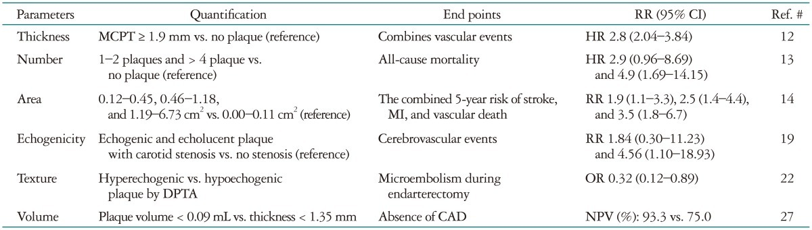
Q23
easy QID 2718
Correct
Which of the following valves is involved in Ebstein's anomaly?
ATricuspid(95%)
BAortic(1%)
CPulmonic(2%)
DMitral(2%)
Your answerA
Correct answerA. Tricuspid
Vital Concept
Ebstein's anomaly involves congenital abnormality of the tricuspid valve and right ventricle.
Explanation
Tricuspid
Ebstein's anomaly involves congenital abnormality of the tricuspid valve and right ventricle with the following specific characteristics: persistent adherence of the posterior and septal tricuspid leaflets to the myocardium, apical displacement of the tricuspid annulus, thin-walled dilatation of atrialized portion of the right ventricle, irregularity/tethering of the anterior leaflet, and dilatation of the true tricuspid annulus.
Incorrect Answers:
B,C,D: Ebstein's anomaly results from abnormal development of tricuspid valve. No other cardiac valves are affected in this syndrome.
Vital Concept: Ebstein's anomaly involves congenital abnormality of the tricuspid valve and right ventricle.
Q24
moderate QID 4996
Correct
A 51-year-old male presents with altered mental status. The following CT is obtained. Which of the following is the next best step in management?
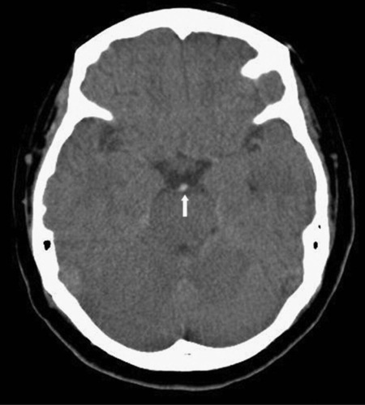
AUrgent lumbar puncture(1%)
BCTA(84%)
CMRI of the head including diffusion weighted imaging(11%)
DUrgent craniotomy(1%)
ENo intervention is necessary(4%)
Your answerB
Correct answerB. CTA
Vital Concept
The hyperdense basilar artery sign on unenhanced CT indicates basilar thrombosis with high specificity and predicts poor outcomes. Urgent CTA is indicated to confirm occlusion and guide endovascular intervention.
Explanation
CTA
The non-contrast head CT shows a hyperdense basilar artery as well as hypoattenuation in the bilateral cerebellar hemisphere. This is a frequently overlooked abnormality in patients with altered mental status and is an emergent finding. The patient has a basilar artery thrombosis and emergent catheter angiogram with attempted thrombectomy should be considered. A post-contrast CTA is typically used to confirm thrombus location as well as potential tandem occlusion within the SCA if thrombus is in the basilar tip.
Incorrect Answers:
A. Lumbar puncture is not indicated.
C. MRI would further delay care and is not necessary if the imaging and clinical picture fit.
D. Digital subtraction angiography would be the next best therapeutic step for mechanical thrombectomy if not contraindicated.
E. The noncontrast head CT shows a hyperdense basilar artery. This is a frequently overlooked abnormality in patients with altered mental status and is an emergent finding. The patient has a basilar artery thrombosis and emergent catheter angiogram with attempted thrombectomy should be considered. A post-contrast CTA could be considered for confirmation but should not delay the patient's care.
Vital Concept: The hyperdense basilar artery sign on unenhanced CT indicates basilar thrombosis with high specificity and predicts poor outcomes. Urgent CTA is indicated to confirm occlusion and guide endovascular intervention.
Q25
hard QID 44233
Correct
A 28-year-old female patient presents with chronic insidious onset of fever, dyspnea, and cough. CTA pulmonary embolism study was negative. Which of the following is true regarding the patient's most likely diagnosis?
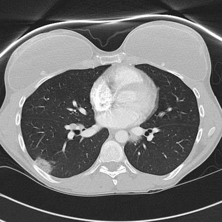
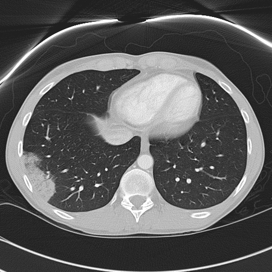
AAntibiotics are often a treatment of choice(18%)
BCorticosteroids often worsen disease(4%)
CAirspace disease is often migratory(68%)
DThe radiographic depiction of this disease presents abruptly, but resolves abruptly(9%)
Your answerC
Correct answerC. Airspace disease is often migratory
Vital Concept
Chronic eosinophilic pneumonia shows characteristic peripheral and upper lobe consolidation and ground-glass opacities on CT, described as the photographic negative of pulmonary edema - this peripheral distribution pattern is key to distinguishing it from other pneumonias and helps guide steroid therapy.
Explanation
Airspace disease is often migratory
CT images demonstrate peripheral consolidations/ground-glass opacities. In the chronic setting, two diagnoses that must be considered are chronic eosinophilic pneumonia and cryptogenic organizing pneumonia. This patient had chronic eosinophilic pneumonia, an idiopathic condition where inflammatory cells consisting largely of eosinophils fill the airspaces. Blood eosinophilia is common, and patients often have a dramatic response to corticosteroids.
Incorrect Answers:
A. Antibiotics would not help this patient unless there was an underlying infection in addition to the chronic eosinophilic pneumonia.
B. Corticosteroids worsening the disease would be false, as they are the preferred treatment, and patients have a generally good response.
D. An abrupt presentation and resolution would be false, as this is often a chronic disease.
Vital Concept: Chronic eosinophilic pneumonia shows characteristic peripheral and upper lobe consolidation and ground-glass opacities on CT, described as the photographic negative of pulmonary edema - this peripheral distribution pattern is key to distinguishing it from other pneumonias and helps guide steroid therapy.
Q26
hard QID 2959
Correct
A 64-year-old male undergoes a CT evaluation of a solitary pulmonary nodule noted on a chest radiograph performed for tuberculosis screening. He has a history of hypertension, gastro-esophageal reflux, and osteoarthritis. He has a 20-pack-year smoking history but quit approximately 20 years ago. He is asymptomatic and feels well. Which of the following features, if present, is most suggestive of malignancy?
APresence of intranodular fat(0%)
BPresence of thin-walled cavitation(28%)
CPresence of diffuse, solid calcification(1%)
DPresence of popcorn-like calcification(1%)
EPresence of amorphous/reticular or punctate calcification(69%)
Your answerE
Correct answerE. Presence of amorphous/reticular or punctate calcification
Vital Concept
Amorphous, reticular, and punctate calcification patterns in lung nodules are associated with malignancy, particularly mucinous adenocarcinoma, contrasting with classic benign calcification patterns (central, laminar, popcorn, diffuse). These irregular calcification patterns should raise suspicion for lung cancer rather than provide reassurance of benignancy.
Explanation
Presence of amorphous/reticular or punctate calcification
Distinguishing benign from malignant solitary pulmonary nodules radiographically can spare patients from undergoing unnecessary invasive procedures. Calcification in lung cancer is rarely observed on examination of chest radiography but can be seen on CT. Amorphous/reticular calcification are patterns that can be seen in malignancy. Punctate calcification may also occur in lung cancer if there is engulfment of a preexisting calcified granulomatous lesion or metastases. If calcification is not apparent at visual inspection, its presence can sometimes be inferred from CT attenuation values determined with CT densitometry. An attenuation value of 200 HU is a good discriminatory value for distinguishing calcified from non-calcified nodules. In addition to calcification, there are several other features that can be used to distinguish benign from malignant pulmonary nodules. A lobulated contour implies uneven growth, which is associated with malignancy. While lobulation can also occur in benign nodules, a nodule with an irregular or spiculated margin and distortion of adjacent vessels is more likely to be malignant. Finally, the smaller the nodule, the more likely it is to be benign. Up to 80% of benign nodules are less than 2 cm in diameter.
Incorrect Answers:
A. The presence of intranodular fat with an attenuation value between approximately 40 to about 120 HU is suggestive of a hamartoma. Fat is best visualized using thin-section CT.
B. Cavitation occurs in both benign and malignant nodules. Benign cavitary nodules generally have smooth, thin walls, while malignant nodules typically have thick, irregular walls. In general, most nodules with a wall thickness greater than 16 mm are malignant and those with a wall thickness less than 4 mm are benign. However, wall thickness alone cannot be used to differentiate benign from malignant cavitary nodules as there is significant overlap.
C. The presence of diffuse, solid calcification typically occurs as a result of prior histoplasmosis or tuberculosis infections.
D. The presence of popcorn-like calcification in a solitary pulmonary nodule is characteristic of the chondroid calcification seen in hamartomas.
Vital Concept: Amorphous, reticular, and punctate calcification patterns in lung nodules are associated with malignancy, particularly mucinous adenocarcinoma, contrasting with classic benign calcification patterns (central, laminar, popcorn, diffuse). These irregular calcification patterns should raise suspicion for lung cancer rather than provide reassurance of benignancy.
Q27
easy QID 4998
Correct
In quality control measures for a gamma camera in nuclear medicine, spatial resolution is assessed using which of the following?
APLES phantom(2%)
BBar phantom(91%)
CIntrinsic flood(4%)
DJaszczak phantom(3%)
Your answerB
Correct answerB. Bar phantom
Explanation
Bar phantom
Spatial resolution is the ability of a system to accurately distinguish two closely spaced objects as two separate entities. Using a bar phantom, one can qualitatively determine the ability of the system to maintain separation between two bars.
Incorrect Answers:
A. PLES stands for parallel line equal spacing bar. Typically it is used for assessing spatial linearity, as it allows one to determine the extent of positional distortion due to regional non-uniformities.
C. Intrinsic flood is used to assess the uniformity of a gamma camera.
D. A Jaszczak phantom is used in assessing SPECT imaging performance, not gamma cameras.
Q28
easy QID 3066
Correct
A 64-year-old male patient who has a history of smoking presents with hematuria. An ultrasound demonstrates focal thickening of the bladder wall with an intraluminal iso/hypoechoic component showing internal flow on color Doppler evaluation. Which of the following is the most likely diagnosis?
AUrachal cyst(1%)
BBladder stone(3%)
CLeiomyoma of the urinary bladder(2%)
DCarcinoma of urinary bladder(94%)
ECystitis(0%)
Your answerD
Correct answerD. Carcinoma of urinary bladder
Vital Concept
On ultrasound, bladder cancer appears as iso/hypoechoic wall thickening with possible intraluminal extension and vascularity on color Doppler. The presence of vascularity distinguishes it from non-vascular clots, stones and debris. Real-time assessment on ultrasound has the added benefit of differentiating mobile clots/stones from fixed tumors.
Explanation
Carcinoma of urinary bladder
In this patient with history of smoking and hematuria and ultrasound depicting iso/hypoechoic intraluminal mass with internal color Doppler flow is most compatible with carcinoma of the urinary bladder.
Incorrect Answers:
A. This finding is solid and demonstrates flow on color Doppler. This finding is inconsistent with a cyst.
B. Mobile echogenic focus with posterior acoustic shadowing and no color Doppler flow would be most consistent with sonographic appearance of a bladder stone.
C. This finding is generally much less common than bladder carcinoma. These masses tend to be more hypoechoic with echogenic surface. Bladder cancer should be the leading diagnostic consideration for focal vascular bladder masses, particularly with the given history.
E. Cystitis usually results in diffuse thickening and surface irregularity of the bladder wall, not a focal mass.
Vital Concept: On ultrasound, bladder cancer appears as iso/hypoechoic wall thickening with possible intraluminal extension and vascularity on color Doppler. The presence of vascularity distinguishes it from non-vascular clots, stones and debris. Real-time assessment on ultrasound has the added benefit of differentiating mobile clots/stones from fixed tumors.
Q29
hard QID 5025
Incorrect
Which of the following is the primary determinant of intrinsic spatial resolution in a multidetector positron emission tomography (PET) scanner?
ADetector crystal thickness(39%)
BDetector face width(37%)
CDetector absorption efficiency(11%)
DDetector physical density(7%)
EScintillation crystal material(6%)
Your answerA
Correct answerB. Detector face width
Vital Concept
The major determinant of intrinsic spatial resolution in a PET scanner is the size of the detector face.
Explanation
Detector face width
The primary determinant of intrinsic spatial resolution in PET is the detector face width. The spatial resolution cannot exceed the detector face width of the crystal elements since the interaction position is limited by the boundaries of the individual crystal where the photon is detected.
Incorrect Answers:
A. C. D. E. Detectors usually range in size from about 4 to 6 mm. The crystal thickness, material, density, and absorption efficiency are all related to detector efficiency with less of an effect on spatial resolution.
Vital Concept: The major determinant of intrinsic spatial resolution in a PET scanner is the size of the detector face.
Q30
easy QID 37559
Correct
During which of the following in the menstrual cycle is it recommended that a premenopausal patient undergo breast magnetic resonance imaging (MRI)?
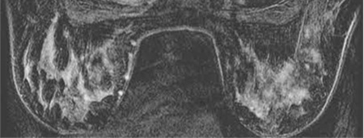
A1 to 6 days after the onset of the menstrual cycle(4%)
B7 to 14 days after the onset of the menstrual cycle.(91%)
C15 to 18 days after the onset of the menstrual cycle.(3%)
D19 to 21 days after the onset of the menstrual cycle.(1%)
EAny time during the menstrual cycle.(1%)
Your answerB
Correct answerB. 7 to 14 days after the onset of the menstrual cycle.
Vital Concept
Historical practice restricted breast MRI to menstrual cycle week 2 based on studies showing lowest parenchymal enhancement, but current evidence demonstrates no diagnostic performance differences across cycle phases, supporting flexible scheduling due to improved MRI technology and interpretation.
Explanation
7 to 14 days after the onset of the menstrual cycle.
Early breast MRI studies showed parenchymal enhancement was lowest in menstrual cycle week 2, leading to widespread practice of restricting screening to this timeframe to minimize false-positives. However, large recent studies demonstrate no significant differences in cancer detection rates, sensitivity, specificity, or positive predictive values across cycle phases. This shift reflects improvements in MRI technology, higher resolution imaging, and refined interpretation techniques that allow effective cancer detection regardless of background enhancement. Current evidence supports flexible scheduling without compromising diagnostic performance.
Incorrect Answers:
A. C. D. These are incorrect time ranges, as discussed above.
Vital Concept: Historical practice restricted breast MRI to menstrual cycle week 2 based on studies showing lowest parenchymal enhancement, but current evidence demonstrates no diagnostic performance differences across cycle phases, supporting flexible scheduling due to improved MRI technology and interpretation.
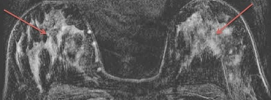
Q31
easy QID 63415
Correct
An asymptomatic woman presents for follow up CT after incidental finding on right upper quadrant ultrasound. What is the most likely diagnosis?
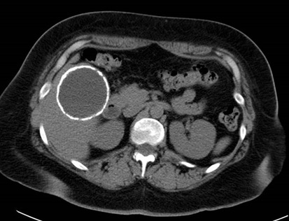
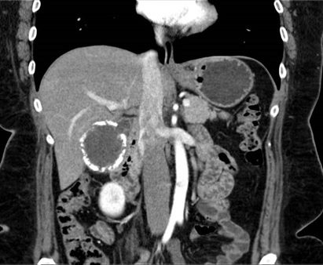
ACholelithiasis(0%)
BVicarious excretion(0%)
CEchinococcal cyst(2%)
DPorcelain gallbladder(98%)
EGallbladder carcinoma(0%)
Your answerD
Correct answerD. Porcelain gallbladder
Explanation
Porcelain gallbladder
Explanation:
Axial and coronal post-contrast CT images demonstrate diffuse thick calcification of the entire gallbladder wall.
Porcelain gallbladder is defined by thick calcification of the entire gallbladder wall. Patients typically are asymptomatic; the thick calcification can be noted on radiography or on ultrasound as extensive shadowing in the gallbladder fossa. While older studies indicated there may be an association with gallbladder adenocarcinoma, newer studies have indicated that risk is much lower than initially thought, around 6%.
Incorrect Answers:
A. Calcified gallstones will present as discrete calcifications within the gallbladder lumen, not within the wall.
B. Vicarious excretion represents the excretion of contrast material through the hepatobiliary system. Hyperdense material would layer dependently; usually, a fluid-fluid level will be seen.
C. While it may be difficult at times to distinguish a large calcified hepatic cyst from a porcelain gallbladder on ultrasound, CT or MRI will usually suggest one over the other. On the above coronal image, a connection from the gallbladder lumen to the cystic duct is seen (orange arrow).
E. While older studies indicated there may be an association with gallbladder adenocarcinoma, newer studies have indicated that risk is much lower than initially thought, around 6%.
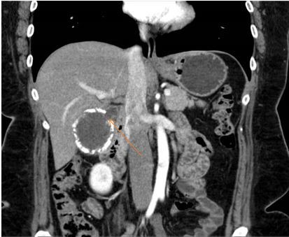
Q32
moderate QID 2865
Correct
Which of the following syndromes is associated with the abnormality seen on the MR images?
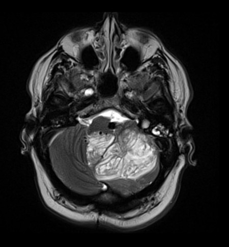
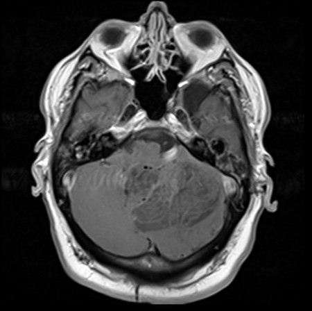
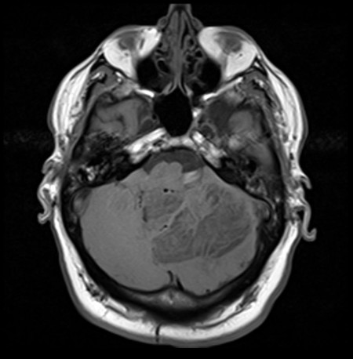
ANeurofibromatosis type 1(1%)
BNeurofibromatosis type 2(1%)
CCowden syndrome(89%)
DTuberous sclerosis(1%)
EVon Hippel-Lindau(7%)
Your answerC
Correct answerC. Cowden syndrome
Vital Concept
The tigroid appearance on cerebellar MRI is virtually diagnostic of Lhermitte-Duclos Disease, which automatically places the patient in the major criteria category for Cowden syndrome diagnosis and triggers comprehensive cancer surveillance protocols given the significantly elevated lifetime malignancy risks in this population.
Explanation
Cowden syndrome
The imaging findings (predominately unilateral cerebellar mass with a "tiger stripe" appearance involving the vermis) are characteristic of Lhermitte-Duclos disease or dysplastic cerebellar gangliocytoma. Lhermitte-Duclos disease is a rare tumor of the cerebellum. It is probably hamartomatous, although the exact pathogenesis remains unknown. Lhermitte-Duclos has a high association with the PTEN hamartoma syndrome, or Cowden syndrome. These patients have a mutation of the PTEN gene and have a high coincidence of associated malignancies, particularly of thyroid and breast.
Incorrect Answers:
A. Typical intracranial manifestations of NF 1 are optic gliomas, bone dysplasias (particularly the sphenoid), and multiple T2 hyperintensities throughout the periventricular white matter.
B. Schwannomas, meningiomas, and ependymomas are typical intracranial manifestations of NF 2. The imaging findings are characteristic of dysplastic cerebellar gangliocytoma, which is not related to NF 2.
D. Tuberous sclerosis is associated with subependymal nodules and cortical tubers. These patients also have an increased incidence of subependymal giant cell astrocytoma. There are no additional findings of tuberous sclerosis present in this patient, and the location and appearance are not typical of subependymal giant cell astrocytoma.
E. Von Hippel-Lindau is typically associated with CNS hemangioblastomas. The typical imaging appearance is the "cyst with a mural nodule." This mass has the characteristic findings of a dysplastic cerebellar gangliocytoma.
Vital Concept: The tigroid appearance on cerebellar MRI is virtually diagnostic of Lhermitte-Duclos Disease, which automatically places the patient in the major criteria category for Cowden syndrome diagnosis and triggers comprehensive cancer surveillance protocols given the significantly elevated lifetime malignancy risks in this population.
Q33
hard QID 18727
Correct
An 82-year-old female patient presents with right upper quadrant pain, fever, nausea, and vomiting. Which of the following is the diagnosis?
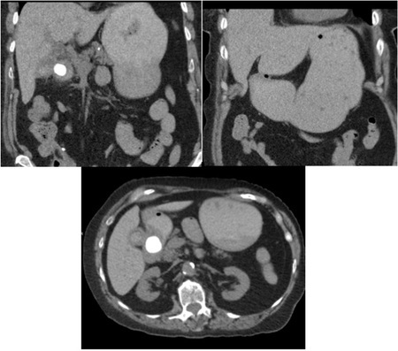
AMirizzi syndrome(23%)
BAcute cholecystitis(3%)
CChronic cholecystitis(1%)
DBouveret syndrome(72%)
Your answerD
Correct answerD. Bouveret syndrome
Explanation
Bouveret syndrome
Two coronal and an axial CT at the level of the stomach and duodenum show that the stomach is grossly distended (red arrow). A large radiopaque gallstone is seen in the duodenum (blue arrows) and there is dilatation of the common bile duct (CBD) (yellow arrow). This is consistent with gallstone ileus into the proximal duodenum with gastric outlet obstruction, also known as Bouveret syndrome.
Incorrect Answers:
A. Mirizzi syndrome is an obstruction of the common bile duct related to an adjacent inflamed gallbladder and cystic duct due to cystic duct obstruction resulting from impacted gallstones.
B. While this patient may have findings of acute cholecystitis on CT, including a thickened gallbladder wall, a large gallstone, and marked pericholecystic stranding, a more specific answer is available.
C. Chronic cholecystitis may be present in this patient. However, a more specific diagnosis is given. A reliable marker for chronic cholecystitis is filling of the gallbladder on biliary scintigraphy with decreased gallbladder ejection fraction.
Q34
easy QID 56015
Correct
The magnetic resonance cholangiopancreatogram (MRCP) shown below depicts which of the following variations?
AObstruction of the common bile duct(1%)
BObstruction of the cystic duct(1%)
CObstruction in cystic duct and pancreatic duct at the ampulla(1%)
DPancreas divisum(97%)
Your answerD
Correct answerD. Pancreas divisum
Vital Concept
Pancreas divisum on MRCP shows predominant pancreatic duct drainage into the minor papilla superior to the bile duct level, with absent or minimal communication between dorsal and ventral ducts.
Explanation
Pancreas divisum
The MRCP shown demonstrates the main pancreatic duct draining proximal to and separately from the common bile duct, into the minor ampulla. The accessory pancreatic duct drains into the major ampulla with the common bile duct. This is a developmental abnormality considered a risk factor for developing pancreatitis and is called pancreas divisum. It results from partial failure of the dorsal and ventral buds to fuse during organogenesis. As a result, the dorsal pancreatic duct drains most of the pancreatic glandular parenchyma via the minor papilla. Although controversial, this variant is considered as a cause of pancreatitis.
A pancreas divisum is the most common variation of pancreatic duct formation and can account for up to 14%.
Pancreatic divisum can result in a santorinicele, which is a cystic dilatation of the distal dorsal duct, immediately proximal to the minor papilla.
Three subtypes are known:
type 1: classic, no connection at all; occurs in the majority of cases (~70%)
type 2: absent ventral duct, minor papilla drain all of pancreas while major papilla drains bile duct (~25%)
type 3: functional, filamentous or inadequate connection between dorsal and ventral ducts (~5%)
Incorrect Answers:
A. Obstruction of any portion of the pancreatic and biliary tree will result in dilation of the upstream portion. In the MRCP shown above, there is no dilation of the common bile duct.
B. Obstruction of any portion of the pancreatic and biliary tree will result in dilation of the upstream portion. In the MRCP shown above, there is no dilation of the cystic duct.
C. Obstruction of any portion of the pancreatic and biliary tree will result in dilation of the upstream portion. In the MRCP shown above, there is no dilation of the common bile duct, pancreatic duct, or cystic duct.
Vital Concept: Pancreas divisum on MRCP shows predominant pancreatic duct drainage into the minor papilla superior to the bile duct level, with absent or minimal communication between dorsal and ventral ducts.
Q35
moderate QID 56004
Correct
Which of the following patient populations is most susceptible to subchondral insufficiency of the knee?
APre-pubertal females(3%)
BMenstrual age females(3%)
CPostmenopausal females(89%)
DYoung males(6%)
Your answerC
Correct answerC. Postmenopausal females
Vital Concept
Subchondral insufficiency fracture of the knee most commonly affects women over 50 years of age. Low bone mineral density associated with menopause contributes to increased risk.
Explanation
Postmenopausal females
Subchondral insufficiency of the knee is now felt to represent a stress response, at risk for developing insufficiency fracture, and was first described in elderly, postmenopausal females. Subsequent experience has demonstrated this entity within younger males and females, typically with a history of strenuous activity and associated meniscal tears and cartilage loss.
This supports a mechanical, stress-related etiology. The hypothesis is that meniscectomy and meniscal tears, particularly of the medial meniscus posterior root, increase contact pressures and create an environment conducive to insufficiency fractures. The development of osteonecrosis is now felt represent as end stage of this disease, historically diagnosed before the advent of routine MR imaging.
Incorrect Answers:
A. Although a subchondral stress response and fractures can develop in any patient, pre-pubertal females are not thought to be at increased risk unless they have a history of increased activity and underlying abnormality such as meniscal tear and cartilage loss.
B. Although a subchondral stress response and fractures can develop in any patient, reproductive-age females are not thought to be at increased risk unless they have a history of increased activity and underlying abnormalities such as meniscal tear and cartilage loss.
D. Although a subchondral stress response and fractures can develop in any patient, young males are not thought to be at increased risk unless they have a history of increased activity and underlying abnormalities such as meniscal tear and cartilage loss.
Vital Concept: Subchondral insufficiency fracture of the knee most commonly affects women over 50 years of age. Low bone mineral density associated with menopause contributes to increased risk.
Q36
easy QID 22435
Correct
A 24-year-old female patient with a history of multiple uterine dilatation and curettage procedures presents with severe persistent vaginal bleeding. Which of the following is the diagnosis?
ARetained products of conception(2%)
BUterine arteriovenous fistula or malformation(98%)
CChoriocarcinoma(0%)
DComplete molar pregnancy(0%)
EPartial molar pregnancy(0%)
Your answerB
Correct answerB. Uterine arteriovenous fistula or malformation
Vital Concept
Digital subtraction angiography (DSA) is the gold standard for diagnosing uterine arteriovenous malformation. DSA best demonstrates the characteristic vascular nidus with direct arteriovenous communication. This case shows early arterial filling of the nidus with rapid venous drainage without intervening capillary beds.
Explanation
Uterine arteriovenous fistula or malformation
Arterial phase contrast injection (top, red arrows) with early draining venous structures (2nd image from top, blue arrows) and an intervening tangle of vessels (green arrows) should raise the suspicion for arteriovenous fistula or malformation. The tangle of vessels seen on the arterial phase is suspicious for the presence of a nidus. It should be remembered that uterine arteriovenous malformations are exceedingly rare, with fewer than 100 cases reported in the literature. In fact, if uterine arteriovenous malformation is considered in the differential diagnosis, careful evaluation for retained products of conception should be undertaken. Still, AVM should be considered in cases of severe intractable uterine bleeding. In this case, the vascular nidus and early draining vein cinches the diagnosis. Occlusion of the arteriovenous communication can be performed using particulate or liquid embolic agents depending on operator preference.
Incorrect Answers:
A. Retained products of conception can appear as a heterogeneously enhancing mass of endometrial tissue with marked vascularity on color Doppler imaging. Clinically, the patient frequently has persistently elevated hCG. Persistent retained products of conception should raise the concern for gestational trophoblastic neoplasia.
C. The finding of a large, heterogeneous uterine mass should raise suspicion of choriocarcinoma. Gestational trophoblastic disease exists on a spectrum of severity with complete moles and partial moles tending toward benign behavior and invasive moles and choriocarcinoma behaving in a malignant manner with associated tissue invasion and distant metastases. Choriocarcinoma may occur after a normal pregnancy, a failed pregnancy, or after a molar pregnancy. It is best imaged on pelvic ultrasound and MRI, demonstrating invasion of the myometrium by a heterogeneous mass with marked color Doppler signal. CT is more useful for staging of disease and detection of metastases. Patients often present with persistent vaginal bleeding and elevated hCG. Invasive disease is frequently treated with chemotherapeutic agents such as methotrexate.
D. Complete hydatidiform moles are the result of fertilization of an “empty ovum” and are entirely of paternal karyotype, most frequently with 46, XX karyotypes. On imaging, they appear as an ill-defined cystic intrauterine mass with marked color Doppler signal indicating high vascularity. Elevated hCG frequently results in ovarian theca lutein cysts.
E. Partial hydatidiform moles are typically triploid karyotypes, usually with two haploid paternal sets of chromosomes and one haploid maternal set of chromosomes. The condition is known as diandric triploidy (paternally derived triploidy). They frequently appear with anomalous fetal tissue and abnormal thickening and cystic changes of the placenta. Alternatively, they can appear with empty gestational sac or with miscarriage. HCG levels are not as markedly elevated, and associated theca lutein cysts and hyperemesis are rare.
Vital Concept: Digital subtraction angiography (DSA) is the gold standard for diagnosing uterine arteriovenous malformation. DSA best demonstrates the characteristic vascular nidus with direct arteriovenous communication. This case shows early arterial filling of the nidus with rapid venous drainage without intervening capillary beds.
Q37
easy QID 20813
Correct
A 48-year-old female patient presents for follow-up after glioma resection and chemoradiation. Which of the following is the most appropriate next step?
ARe-excision(5%)
BExpansion of radiation field(1%)
CStereotactic radiosurgery(2%)
DIncreased dose of temozolomide(0%)
EContinued follow-up(92%)
Your answerE
Correct answerE. Continued follow-up
Explanation
Continued follow-up
An important component of brain tumor imaging is the use of gadolinium perfusion magnetic resonance images (MRI). Perfusion MRI in tumor imaging provides information regarding the presence or absence of regional elevated cerebral blood volume relative to the rest of the brain. It is often portrayed via red-green-blue color-coded maps that identify regions of elevated cerebral blood volume in the red portion of the spectrum.
In this case, there is a left frontal resection cavity (blue arrow) with surrounding non-enhancing T2 hyperintensity (most likely related to gliosis after surgery/ radiation), thin surrounding and internal enhancement (red arrow) without nodularity (likely also representing gliosis), no restricted diffusion (green arrow), and no elevated relative cerebral blood volume (yellow arrow).
These findings suggest no evidence of enhancing, hypercellular, or hypervascular tumor recurrence. Findings that may suggest recurrent tumors would include increased surrounding T2 hyperintensity, nodular enhancement, restricted diffusion, or elevated relative cerebral blood volume.
Incorrect Answers:
A. B. C. D. Re-excision, expansion of the radiation field, radiosurgery, and increased doses of temozolomide would not be the most appropriate next steps, as radiation necrosis may present as a “pseudoprogression” picture in which there are increased T2 signal and restricted diffusion. Perfusion imaging can help differentiate this from true progression, as pseudoprogression would not be expected to demonstrate elevated cerebral blood volume.
Q38
hard QID 21149
Correct
A 53-year-old male patient presents with acute right upper quadrant pain. Which of the following is the most appropriate follow-up study, assuming spontaneous resolution of the acute episode?
AKidney-urinary bladder (KUB) radiography(2%)
BRoutine abdominal MRI(11%)
CNon-contrast computed tomography (CT)(3%)
DFluoroscopic contrast small bowel follow-through(15%)
ECapsule endoscopy(68%)
Your answerE
Correct answerE. Capsule endoscopy
Explanation
Capsule endoscopy
The CT images show a small bowel intussusception (green arrows), which contains mesenteric fat and vasculature. In the adult patient, the most common and feared etiology for the development of intussusception is the presence of a mucosal mass lesion.
If the intussusception presents in the small bowel, the lead point mass is most likely benign. If the intussusception involves the large bowel, the lead point is most likely malignant. Given the location of suspected small bowel mass and available options, capsule endoscopy is the best option to specifically evaluate for a mucosal mass. This area is not definitively accessible by upper or lower endoscopy.
Incorrect Answers:
A. Plain radiography can be utilized to exclude the presence of ongoing obstruction. However, on radiography, no comment can be made with regard to the presence of a mucosal mass.
B. Conventional abdominal MR would not elicit the details necessary for a mucosal lesion. MR enterography could be performed for the evaluation of a mucosal mass and can be of utility for problematic cases or for follow-up.
C. Non-contrast CT is not a sensitive examination for detection of subtle mucosal masses.
D. Small bowel follow-through fluoroscopic examination can be of utility for the detection of small bowel mucosal masses. However, capsule endoscopy is more sensitive and specific, providing direct visualization of the involved bowel
Q39
moderate QID 3033
Correct
This 60-year-old male patient had dysuria. Which of the following statements is true?
AThis entity does not elevate risk for cancer(3%)
BEvidence of ureterocele(8%)
CThe urinary bladder appears normal(0%)
DThis is a classic case of adenocarcinoma of urinary bladder(2%)
EBladder shows diverticulum with trabeculation(86%)
Your answerE
Correct answerE. Bladder shows diverticulum with trabeculation
Vital Concept
Large bladder diverticula in older men indicate acquired bladder outlet obstruction requiring urological evaluation. These carry 0.8% to 10% malignancy risk and necessitate cystoscopy, urine cytology, and treatment of underlying obstruction to prevent complications including infection, stones, and cancer.
Explanation
Bladder shows diverticulum with trabeculation
There is a diverticulum arising from the urinary bladder with trabeculation. Large bladder diverticulum in an older man with dysuria indicates chronic bladder outlet obstruction, typically from benign prostatic hyperplasia. Risk factors for benign prostatic hyperplasia include increasing age, family history, metabolic syndrome, obesity and diabetes.
The contents of the diverticulum are predisposed to infection, stone formation, and malignant transformation (0.8% to 10% risk). The patient requires urological evaluation including cystoscopy and urine cytology to exclude intradiverticular bladder tumor, plus treatment of underlying obstruction. Acquired diverticula lack a muscle layer, making any future malignancy prone to early extradiverticular extension and advanced staging. CT urography may be needed if cystoscopy is limited by a narrow diverticular neck.
Incorrect Answers:
A. Large diverticula can result in urinary stasis, chronic infection, and calculi development. Chronic infection is a known risk factor for malignancy/metaplasia.
B. Typically ureteroceles will present in the pediatric population rather than this demographic. Additionally, a ureterocele will often involve the UVJ with the cystic portion within the wall of the bladder or potentially even herniating into the bladder lumen.
C. The bladder is not normal.
D. No evidence of bladder malignancy is seen. Additionally, adenocarcinoma is typically seen with urachal anomalies.
Vital Concept: Large bladder diverticula in older men indicate acquired bladder outlet obstruction requiring urological evaluation. These carry 0.8% to 10% malignancy risk and necessitate cystoscopy, urine cytology, and treatment of underlying obstruction to prevent complications including infection, stones, and cancer.
Q40
moderate QID 5057
Correct
How would one best localize the nodules depicted in the following computed tomography (CT) image?
AOrganizing(0%)
BPerilymphatic(7%)
CRandom(7%)
DCentrilobular(85%)
ESubpleural(0%)
Your answerD
Correct answerD. Centrilobular
Vital Concept
Pulmonary nodules are a common finding and are usually incidental. They can be classified according to size, morphology, or distribution.
Explanation
Centrilobular
Pulmonary nodules are small, rounded opacities within the pulmonary interstitium. Detection of smaller and smaller nodules occurs because of increasing spatial resolution of CT scanners. Pulmonary nodules are a common finding and are usually incidental. They can be classified according to size, morphology, or distribution.
The CT image above shows innumerable small nodules that spare the absolute periphery (all are 5 to 10 mm from the pleural surface and are well- depicted along the fissures). This pattern is the hallmark of centrilobular nodules and suggests small airways or small vessel disease.
More common etiologies include infectious or inflammatory bronchiolitis, endobronchial spread of mycobacterium, hypersensitivity pneumonitis, respiratory bronchiolitis-interstitial lung disease (RB-ILD), and less commonly, endobronchial spread of tumor, pneumoconiosis, edema, or vasculitis. Peribronchovascular nodules are similar in etiology to perilymphatic nodules. Sarcoidosis accounts for most of these cases, with lymphangitic spread of tumor, silicosis, amyloidosis, and lymphoid interstitial pneumonia (LIP) being much less common.
Incorrect Answers:
A. The limited extent of residual fibrosis, compared with the extensive parenchymal involvement seen in the organizing nodules, suggests that a normal reparative healing response has occurred, with reorganization of the damaged epithelial basement membranes and re-expansion of the alveoli. Imaging findings of anterior-predominant reticulation, bronchiectasis, and cystic spaces in combination with basilar sparing are helpful to making the diagnosis.
B. Perilymphatic nodules are typically seen immediately subpleural and can be clustered along interlobular septae and the fissures.
C. The random pattern has no specific predilection and is most commonly seen in miliary diseases such as TB, fungal disease, or metastatic disease. Less commonly, sarcoidosis or early LCH can have this appearance.
E. "Subpleural" nodules are essentially perilymphatic nodules.
Vital Concept: Pulmonary nodules are a common finding and are usually incidental. They can be classified according to size, morphology, or distribution.
Q41
hard QID 48959
Correct
Which of the following is correct regarding the physics of medical imaging?
AThe optical distributor is responsible for transmitting a focused image from the output phosphor of the image intensifier to the focal planes of the cameras.(22%)
BThe aperture setting determines the patient's x-ray exposure level and the image noise level.(9%)
CIncreasing the mAs decreases the image noise; reducing the mAs increases image noise.(28%)
DThe final resolution in a fluoroscopic image depends only on patient motion and the digital system.(25%)
EAll of the above.(2%)
FA, B, and C(14%)
Your answerF
Correct answerF. A, B, and C
Vital Concept
Fluoroscopic resolution is determined by several factors: focal spot size, image receptor characteristics (pixel size, phosphor thickness), magnification mode, patient motion, and geometric factors - with magnification mode and focal spot being the primary controllable determinants during imaging.
Explanation
A, B, and C
It is important to understand that there are many factors other than patient motion and digital system that can contribute to the final resolution in a fluoroscopic image. These include the video system, the digital system, the II, the x-ray tube focal spot, and patient motion. Under some circumstances, the video system is the major limiting component to resolution. Under other circumstances, the video system may impose no significant limitations because one or more of the other components are limiting.
These two cases can be demonstrated by plotting the modulation transfer functions (MTFs) of a video system, the other components (eg, the II and x-ray tube focal spot), and the total system. The total MTF is the product of the video and everything else MTFs:
MTFtotal (u) = MTFvideo (u) x MTF everything else (u)
where u is the spatial frequency in cycles per millimeter.
Incorrect Answers:
A. B. C. These are all true statements.
Vital Concept: Fluoroscopic resolution is determined by several factors: focal spot size, image receptor characteristics (pixel size, phosphor thickness), magnification mode, patient motion, and geometric factors - with magnification mode and focal spot being the primary controllable determinants during imaging.
Q42
easy QID 56295
Correct
Sagittal T1- and T2-weighted images of the thoracic spine are shown above. What is the most appropriate next step in managing the patient?
AAdmission to the hospital for treatment of secondary infection.(1%)
BNo disposition instructions are required following the MRI, no emergent findings are present.(1%)
CAdmission to the hospital through the emergency room for treatment of spinal cord ischemia, is advised.(1%)
DAdmission to the hospital through the emergency room for treatment of spinal cord compression is advised.(98%)
Your answerD
Correct answerD. Admission to the hospital through the emergency room for treatment of spinal cord compression is advised.
Explanation
Admission to the hospital through the emergency room for treatment of spinal cord compression is advised.
The images demonstrate a soft tissue mass resulting in convex deformity of a lower thoracic vertebral body posteriorly, and severe impingement of the spinal cord and conus. This is an unexpected, emergent condition requiring direct communication of findings to the referring physician and prompt medical attention such as hospital admission, including both surgical and medical treatment.
Incorrect Answers:
A. There is no finding to suggest infection in the thoracic spine. Findings of infection include increased fluid signal within the disk space, erosion of the vertebral endplates and possibly paraspinal and epidural inflammation.
B. Spinal cord compression is considered an emergent, unexpected finding and requires appropriate management of the patient by the interpreting radiologists.
C. MRI findings of spinal cord ischemia include increased T2 signal within the cord, particularly within the vascular watershed areas. No such finding is present here. Instead, there is severe compression of the cord and conus due to a mass arising from within or adjacent to the vertebral body.
Q43
hard QID 20768
Correct
Given the location of the needle (white) in relation to the lesion (yellow) on these post-fire diagrams, what should the provider think of the location of the needle in relation to the lesion on this stereotactic biopsy diagram?
AGood position(9%)
BX-axis error(70%)
CZ-axis error(14%)
DY-axis error(5%)
ECombined X and Y-axis error(0%)
Your answerB
Correct answerB. X-axis error
Explanation
X-axis error
Pre-fire and post-fire -15 degree and +15 degree images are acquired during stereotactic biopsy. The post-fire images shown demonstrate a horizontal/x-axis error with the needle trough appearing outside of the lesion on the right-sided image. Adjustment of the needle toward the lesion in the horizontal axis is required for optimal positioning.
Incorrect Answer:
A. This is not ideal good position for a post-fire image.
C. A Z-axis error would would result in needle trough either medial/superficial or lateral/deep to the lesion in both stereotactic images. The trough appears to the right of the lesion on the right-sided image, but appears within the lesion on the left; this appearance is more consistent with X-axis error.
D. E. Y-axis error would be relative to the vertical plane of the target (above or below the lesion); since this is not seen, neither of these answers can be true.
Q44
moderate QID 21594
Correct
A 23-year-old male patient presents to the emergency department (ED) after a high-speed motor vehicle collision (MVC) with the imaging findings shown below. Which of the following is the best next step?
In the setting of traumatic aortic injury, CT can show direct signs (intramural hematoma, intimal flap, pseudoaneurysm) and indirect signs (periaortic hematoma, caliber change). For descending aortic TAI post-MVC, endovascular repair is preferred first-line treatment with lower mortality and reduced complications compared to open repair.
This is a proximal descending aortic pseudoaneurysm. There is a periaortic hematoma (blue arrow) and irregularity of the descending aorta (red arrow) just distal to the left subclavian artery, at the level of the ligamentum arteriosum. These findings are all consistent with traumatic aortic injury.
Aortic transections related to blunt trauma typically occur at sites of relative anatomic fixation of the aorta. Specifically, they tend to occur at the ligamentum arteriosum, the diaphragmatic hiatus, and the aortic root. Transections related to blunt trauma have an extremely high mortality rate, and most patients never make it to imaging. If the patient is seen to have a traumatic aortic transection, the treatment is immediate endovascular or surgical repair.
A frequent point of confusion is the classification of this descending aortic lesion as a lesion that qualifies for medical management (as a Stanford Type B dissection).
However, traumatic aortic transections must undergo emergent intervention in almost all cases. Medical management is not acceptable.
Incorrect Answers:
A. As above, medical management is not an acceptable decision in the setting of traumatic aortic transection.
B. The patient needs emergent intervention. Unless angiographic treatment is planned, angiography is not a good choice.
C. Echocardiography can be used to visualized aortic dissection and injury, however this degree of injury mandates immediate surgical repair.
Vital Concept: In the setting of traumatic aortic injury, CT can show direct signs (intramural hematoma, intimal flap, pseudoaneurysm) and indirect signs (periaortic hematoma, caliber change). For descending aortic TAI post-MVC, endovascular repair is preferred first-line treatment with lower mortality and reduced complications compared to open repair.
Q45
easy QID 47083
Correct
Which of the following is the most likely diagnosis in this 62-year-old male patient with right upper quadrant pain and jaundice?
AHepatic adenoma(0%)
BFocal nodular hyperplasia(0%)
CHepatocellular carcinoma(97%)
DFibrolamellar hepatocellular carcinoma(2%)
EHemangioma(0%)
Your answerC
Correct answerC. Hepatocellular carcinoma
Vital Concept
Infiltrative hepatocellular carcinoma in cirrhosis can be radiographically occult with no discrete mass visible, mimicking confluent fibrosis - look for vascular invasion as a key diagnostic clue since this subtype has high propensity for venous involvement.
Explanation
Hepatocellular carcinoma
The contrast-enhanced portal venous phase CT shows a shrunken and nodular liver (yellow arrows) with ascites (blue arrows) and large portacaval collateral vessels (red arrow). These are all findings of cirrhosis and portal hypertension. Any mass seen in this setting is hepatocellular carcinoma until proven otherwise. Approximately 70% of patients with HCC have cirrhosis, and conversely, up to 10% of patients with cirrhosis will develop HCC. On CT they appear as heterogeneous masses, often with hemorrhage and fat, and are characterized by arterial enhancement with washout, given their primary arterial rather than portal venous vascularity. Hypoattenuating tissue is also noted in the area of the portal vein. Though not definitive on this single image, advise thorough assessment of this area on all planes and post contrast phases for portal vein thrombus or tumor thrombus.
Incorrect Answers:
A. Hepatic adenomas are rare benign hepatic neoplasms, most frequently seen in young patients in the setting of use of hormonally active drugs and medications, including oral contraceptives and anabolic steroids. Their CT appearance depends on the subtype. Encapsulation is seen in approximately 20% of cases, best appreciated in the delayed phase. Intratumoral hemorrhage and lipids are also common.
B. Focal nodular hyperplasia is often referred to as the stealth lesion. It appears isodense or hypodense to normal liver on non-contrast exams. There is transient, intense, homogeneous arterial phase enhancement which on the portal venous phase is isodense to background liver. A unique feature is a central scar, most apparent on delayed phase imaging (due to fibrous tissue).
D. Fibrolamellar hepatocellular carcinoma is a rare malignancy seen in young adults, as opposed to typical HCC which is present in cirrhosis. They most often appear on CT, as there is a heterogeneous mass with a well-defined contour and hypoenhancing central scar. The scar less often enhances compared to FNH. Further nodal metastases are frequently present (greater than 50% of cases).
E. A hemangioma is a benign liver lesion of vascular (thought to be venous) etiology. They have characteristic enhancement including incomplete peripheral nodular enhancements on the arterial phase of imaging with progressive centripetal fill-in on the portal venous and delayed phases.
Vital Concept: Infiltrative hepatocellular carcinoma in cirrhosis can be radiographically occult with no discrete mass visible, mimicking confluent fibrosis - look for vascular invasion as a key diagnostic clue since this subtype has high propensity for venous involvement.
Q46
moderate QID 3049
Correct
A 47-year-old female with known BRCA-1 mutation is having screening breast magnetic resonance imaging (MRI) and mentions a palpable abnormality in the right breast. Axial Short Tau Inversion Recovery (STIR) and post-contrast 3D T1-weighted fat-suppressed images are shown below. Which of the following is the most likely diagnosis?
AMultifocal malignancy(3%)
BSimple cysts(85%)
CMultiple fibroadenomas(6%)
DMastitis with abscess formation(1%)
EFat necrosis(5%)
Your answerB
Correct answerB. Simple cysts
Vital Concept
Simple breast cysts appear as thin-walled structures with high T2/STIR signal and no enhancement on contrast-enhanced sequences. These benign lesions are the most common breast finding, require no follow-up, and are distinguished from malignancy by their lack of enhancement.
Explanation
Simple cysts
Images demonstrate a dominant cyst within the right breast, with numerous other small cysts bilaterally, with normal surrounding fibroglandular tissue.
This thin-walled structure with high STIR signal and no enhancement on T1 post-contrast represents a simple breast cyst, the most common benign breast finding. The characteristic features include uniform fluid signal (hyperintense on fat-suppressed T2/STIR, hypointense on T1), thin smooth wall, and crucially, no internal enhancement on dynamic contrast sequences. In BRCA carriers undergoing high-risk screening, simple cysts are frequent incidental findings that require no further evaluation, follow-up, or biopsy. The absence of enhancement distinguishes benign simple cysts from complicated cysts or cystic malignancies that would require tissue sampling. This represents normal fibrocystic change and poses no increased cancer risk.
Incorrect Answers:
A. MRI images demonstrate a dominant cyst within the right breast, with numerous other small cysts bilaterally. No abnormal post-contrast enhancement is seen.
C. Fibroadenomas do not have this appearance on MRI. They are typically isointense to background parenchyma and demonstrate variable degrees of diffuse enhancement.
D. No history is given to suggest breast infection. No abnormal post-contrast enhancement is seen to suggest an inflammatory change in either breast.
E. While fat necrosis would be centrally hypointense on T1-fat suppressed imaging, it would not appear hyperintense on STIR images. Also, this would be unlikely to have a diffusely scattered distribution involving both breasts.
Vital Concept: Simple breast cysts appear as thin-walled structures with high T2/STIR signal and no enhancement on contrast-enhanced sequences. These benign lesions are the most common breast finding, require no follow-up, and are distinguished from malignancy by their lack of enhancement.
Q47
moderate QID 3051
Correct
An 84-year-old male presents with left breast tenderness for 1 month. Mammogram and ultrasound images are shown below. Which of the following is the next step in management of this patient?
ASchedule ultrasound-guided biopsy.(9%)
BRecommend follow-up mammography in 6 months to 1 year.(4%)
CRecommend further imaging with breast MRI.(1%)
DRefer the patient to a breast surgeon for consultation.(1%)
ERecommend follow-up with the referring clinician.(84%)
Your answerE
Correct answerE. Recommend follow-up with the referring clinician.
Vital Concept
Gynecomastia commonly causes tender subareolar fibroglandular tissue in older men. Classic mammographic patterns (fan-shaped or flame-shaped subareolar tissue) combined with tenderness are diagnostic.
Explanation
Recommend follow-up with the referring clinician.
Mammographic images demonstrate retroareolar density in the bilateral breasts, compatible with gynecomastia. Ultrasound confirms the presence of benign fibroglandular tissue in the retroareolar regions. Gynecomastia is a benign condition that requires no imaging follow-up. Possible underlying causes include medications, hormonal status/obesity, liver failure, aging, and others. The patient should follow up with his referring clinician to determine potential etiologies.
Incorrect Answers:
A. Images demonstrate typical findings of gynecomastia. Ultrasound confirms benign fibroglandular tissue in the retroareolar regions. No mass or concerning abnormality is seen on the ultrasound that would warrant biopsy.
B. Images demonstrate typical findings of gynecomastia. No follow-up imaging is necessary unless symptoms persist or worsen, or new concerns arise clinically.
C. Images demonstrate typical findings of gynecomastia. MRI is not warranted and would be an improper use of imaging resources.
D. Gynecomastia itself does not warrant surgical consultation. However, this condition may result in the patient feeling self-conscious, in which case surgical referral can be suggested for cosmetic purposes.
Vital Concept: Gynecomastia commonly causes tender subareolar fibroglandular tissue in older men. Classic mammographic patterns (fan-shaped or flame-shaped subareolar tissue) combined with tenderness are diagnostic.
Q48
moderate QID 21610
Correct
A 38-year-old female with no history of trauma presents with mild progressive right upper extremity weakness. The images shown were obtained. Which of the following is the most appropriate diagnosis?
AOs odontoideum(89%)
BAcute type I odontoid fracture(0%)
CHealed type I odontoid fracture(4%)
DHealed type II odontoid fracture(6%)
EHealed type III odontoid fracture(1%)
Your answerA
Correct answerA. Os odontoideum
Vital Concept
Os odontoideum is a well-corticated ossicle superior to a hypoplastic odontoid with a large gap between fragments. This entity is distinguished from Type II dens fracture by smooth corticated margins and larger separation. Can be orthotopic (normal position) or dystopic (ectopic).
Explanation
Os odontoideum
Lateral radiograph demonstrates a well-corticated but truncated appearance of the dens (blue arrow) and a poorly visualized ossific structure superior to the anterior arch of C1 (blue arrowheads). Sagittal T1-weighted MRI (right image) demonstrates a fragmented appearance of the dens with intact cortices (white arrows) and normal marrow signal, excluding an acute fracture. There is narrowing of the cervical spinal cord at the C1-C2 level (white arrowhead), which likely relates to the patient’s symptoms. Os odontoideum is an anatomic variant that involves a well-corticated ossicle at the tip of the dens. There are two types of os odontoideum: orthotopic (os in normal alignment with C2 body ) and dystopic (os not in normal alignment with C2 body). Patients may be symptomatic (e.g., progressive myelopathy, post-traumatic, etc.) or asymptomatic. Conservative management is preferred for asymptomatic or symptomatic patients with stable symptoms. Evidence of instability and/or progressive myelopathic symptoms should prompt surgical evaluation for possible fixation.
Incorrect Answers:
B. In the images shown, the dens appears fragmented, but there is no cortical disruption, making an acute fracture unlikely.
C. Incorrect but reasonable to consider in the differential diagnosis. A type 1 odontoid fracture is the least common type of odontoid fracture and is managed conservatively. Given the absence of a history of trauma and the low chance of non-union in type 1 odontoid fractures, this diagnosis is unlikely.
D. A type II odontoid fracture involves a fracture extending through the base of the dens at the junction of the C2 vertebral body. In the absence of a history of trauma, an odontoid fracture is less likely than the correct diagnosis. Further, if the images above were to represent an odontoid fracture, the process does not involve the base of the dens, excluding a type II fracture.
E. A type III odontoid fracture involves the base of the dens with oblique extension through C2 vertebral body, which is not seen in the images above.
Vital Concept: Os odontoideum is a well-corticated ossicle superior to a hypoplastic odontoid with a large gap between fragments. This entity is distinguished from Type II dens fracture by smooth corticated margins and larger separation. Can be orthotopic (normal position) or dystopic (ectopic).
Q49
easy QID 37573
Correct
Which of the following is true regarding quality?
AA radiologist reviewing their report and making necessary corrections before submission is an example of quality control.(3%)
BQuality improvement includes implementation of templates to standardize radiology reporting.(2%)
CQuality assurance may involve data-driven audits to verify effectiveness of using reporting templates.(1%)
DAll of the above.(90%)
Your answerD
Correct answerD. All of the above.
Vital Concept
Quality Control (QC) reactively measures and corrects errors/poor quality when found, Quality Assurance (QA) maintains consistent performance through monitoring and prevention strategies, and Quality Improvement (QI) proactively implements systematic changes to enhance performance beyond current levels.
Explanation
All of the above.
Answers A-C are all true statements regarding quality control, quality assurance and quality improvement. Practical examples relating to radiology reporting/templates demonstrate the how these concepts differ from one another. Recommend familiarization with the content on pages 9-10 of the 2026 ABR Noninterpretive Skills Study Guide for thorough understanding of these concepts and how they interact with one another.
Vital Concept: Quality Control (QC) reactively measures and corrects errors/poor quality when found, Quality Assurance (QA) maintains consistent performance through monitoring and prevention strategies, and Quality Improvement (QI) proactively implements systematic changes to enhance performance beyond current levels.
Q50
moderate QID 2754
Correct
From the image provided below, this appearance is most likely related to treatment of which of the following?
AOvarian cystadenocarcinoma(4%)
BEndometrial polyps(6%)
CBreast cancer(88%)
DColon cancer(1%)
EThyroid cancer(1%)
Your answerC
Correct answerC. Breast cancer
Vital Concept
Tamoxifen treatment can result in distinct cystic thickening of the endometrium. This can be seen in up to 50% of patients undergoing breast cancer treatment with tamoxifen.
Explanation
Breast cancer
The ultrasound (US) image above shows a thickened appearance to the endometrium with extensive cystic change. These findings actually represent cystic atrophy of the endometrium related to tamoxifen use in a patient with breast cancer. Despite the atrophy, the cystic change causes a spuriously thickened endometrium causing confusion for endometrial hyperplasia.
Incorrect Answers:
A. B. D. E. Tamoxifen is generally not used in the treatment of ovarian cystadenocarcinoma, endometrial polyps, colon cancer or thyroid cancer.
Vital Concept: Tamoxifen treatment can result in distinct cystic thickening of the endometrium. This can be seen in up to 50% of patients undergoing breast cancer treatment with tamoxifen.
Q51
hard QID 56252
Correct
A 62-year-old male patient presents with an acute change in neurologic status. Below is an MRI of the brain. Symptoms consist of dysphagia, dysarthria, dysphonia, absence of pain on the ipsilateral side of the face, contralateral loss of pain and temperature sensation in the body, and ataxia. Which of the following is the eponym for this constellation of symptoms?
AWallenberg syndrome(74%)
BBrown-Sequard syndrome(23%)
CFriedrich’s ataxia(3%)
DMultiple sclerosis(0%)
Your answerA
Correct answerA. Wallenberg syndrome
Vital Concept
Lateral medullary syndrome shows restricted diffusion in the lateral medulla from posterior inferior cerebellar artery infarction with ipsilateral Horner syndrome, ataxia, and crossed hemisensory deficits. Vertebral artery dissection occurs in up to one-quarter of cases requiring neurovascular imaging.
Explanation
Wallenberg syndrome
The image demonstrates an acute infarct (red arrow) in the left lateral medulla, which is consistent with Wallenberg or lateral medullary syndrome. This produces a very characteristic clinical presentation that consists of dysphasia, dysarthria, dysphonia, absence of pain on the ipsilateral side of the face, contralateral loss of pain and temperature sensation in the body, and possibly ataxia. The infarct is most commonly caused by involvement of the vertebral and/or posterior inferior cerebellar artery (PICA).
Incorrect Answers:
B. Brown-Sequard syndrome is injury to one half of the spinal cord. This produces ipsilateral paralysis and loss of proprioception with contralateral loss of pain and temperature sensation.
C. Friedrich’s ataxia is a genetic disorder of spinocerebellar degeneration.
D. Multiple sclerosis, although it can demonstrate diffusion restriction, is much less likely than an acute infarct in this location.
Vital Concept: Lateral medullary syndrome shows restricted diffusion in the lateral medulla from posterior inferior cerebellar artery infarction with ipsilateral Horner syndrome, ataxia, and crossed hemisensory deficits. Vertebral artery dissection occurs in up to one-quarter of cases requiring neurovascular imaging.
Q52
moderate QID 3087
Correct
A 30-year-old male with medullary thyroid carcinoma underwent a recent total thyroidectomy. A post-thyroidectomy uptake scan is performed using I-131, with calculated thyroidectomy bed uptake of 1.64%. Whole-body anterior and posterior planar images are shown below. Which of the following is the most likely diagnosis and which artifact is shown in the neck?
AResidual thyroid tissue; refraction artifact(1%)
BResidual cancer; refractory artifact(0%)
CResidual thyroid tissue; star artifact(84%)
DResidual cancer; star artifact(14%)
EDistant metastases; refractory artifact(1%)
Your answerC
Correct answerC. Residual thyroid tissue; star artifact
Vital Concept
Medullary thyroid carcinoma arises from parafollicular C-cells that lack sodium-iodide symporter expression and therefore do not concentrate radioiodine. Any I-131 uptake post-thyroidectomy is most compatible with residual normal thyroid tissue, not medullary thyroid carcinoma recurrence. A star artifact is common when using a low- or medium-energy collimator during image acquisition; use of high-energy collimators can significantly reduce this artifact).
Explanation
Residual thyroid tissue; star artifact
The thyroid gland normally uptakes iodine to produce thyroid hormone. When a patient undergoes thyroidectomy, it is often difficult to remove all of the thyroid tissue, hence some residual tissue remains; star artifact is common when using a low- or medium-energy collimator during image acquisition (use of high-energy collimators have been shown to reduce this artifact). This results in the high energy gamma rays penetrating through septa, resulting in a star-shaped appearance. The purpose of a post-thyroidectomy scan is to determine how much residual uptake remains within the thyroidectomy bed and to guide treatment.
Incorrect Answers:
A. While the diagnosis is correct, the type of artifact is incorrect. Refraction is an artifact that occurs with ultrasonography.
B. The two foci of uptake in the neck represent residual thyroid tissue, not necessarily malignancy. The type of artifact listed is incorrect as well; refraction is an artifact that occurs with ultrasonography.
D. Medullary thyroid CA is usually "cold" on I-131, which makes this much less likely.
E. Radiotracer activity demonstrated elsewhere in the body is physiologic.
Vital Concept: Medullary thyroid carcinoma arises from parafollicular C-cells that lack sodium-iodide symporter expression and therefore do not concentrate radioiodine. Any I-131 uptake post-thyroidectomy is most compatible with residual normal thyroid tissue, not medullary thyroid carcinoma recurrence. A star artifact is common when using a low- or medium-energy collimator during image acquisition; use of high-energy collimators can significantly reduce this artifact).
Q53
easy QID 48125
Correct
Which of the following is the diagnosis given the radiograph shown below?
AParosteal osteosarcoma(3%)
BOsteomyelitis(0%)
COsteopathia striata(1%)
DOsteopoikilosis(2%)
EMelorheostosis(95%)
Your answerE
Correct answerE. Melorheostosis
Vital Concept
Melorheostosis shows characteristic candle-wax cortical hyperostosis in a unilateral segmental distribution following sclerotome patterns, representing a mixed sclerosing bone dysplasia affecting both endochondral and intramembranous ossification.
Explanation
Melorheostosis
The femur radiograph shows thick, undulating ridges of bone involving the medial cortex. This is the so-called dripping wax appearance of melorheostosis. The abnormality is typically confined to sclerotomes and can be seen apparently flowing across joints to the next bone. Although changes occur in early childhood, the typical age of presentation is later on. The condition, especially in childhood, is most often asymptomatic, and is diagnosed as an incidental finding. When symptomatic, which is more often the case in adults, joint contracture or pain is present. Of note, osteopathia striata, osteopoikilosis, and melorheostosis may occur simultaneously in mixed sclerosing bone dysplasia.
Incorrect Answers:
A. Parosteal osteosarcoma is also cortically based; however, it would have more aggressive features of bony destruction, periosteal reaction, soft tissue mass, and bony matrix production.
B. Although osteomyelitis can theoretically take on almost any appearance, acutely it produces aggressive and destructive features, which are lacking in this case. Cases of chronic osteomyelitis can produce cortical thickening.
C. Osteopathia striata is a benign condition often discovered incidentally, which appears as numerous vertical striations involving the epiphysis and metaphysis of tubular bones. It is typically asymptomatic, although there can be associated joint discomfort.
D. Osteopoikilosis appears as multiple uniform ovoid/round sclerotic foci in a periarticular distribution. It may be monoarticular or polyarticular and preferentially affects the appendicular skeleton.
Vital Concept: Melorheostosis shows characteristic candle-wax cortical hyperostosis in a unilateral segmental distribution following sclerotome patterns, representing a mixed sclerosing bone dysplasia affecting both endochondral and intramembranous ossification.
Q54
easy QID 21204
Correct
Tc-99m DTPA is used to evaluate which of the following renal functions?
ATubular reabsorption(5%)
BResistive index(0%)
CParenchymal integrity(4%)
DGlomerular filtration rate(90%)
Your answerD
Correct answerD. Glomerular filtration rate
Explanation
Glomerular filtration rate
DTPA (diethylene triamine pentaacetic acid) is filtered by the glomeruli and is neither appreciably secreted nor reabsorbed by the tubular system. As such, it makes a good analog for estimating GFR.
Incorrect Answers:
A. Tubular reabsorption is not readily evaluated by radiopharmaceuticals.
B. Resistive index is assessed using ultrasound, not renal scintigraphy.
C. Parenchymal integrity can be assessed with DMSA (dimercaptosuccinic acid), which is a cortical binding agent. It will not be taken up in areas of active infection or scarring. It is often used following pyelonephritis to evaluate for resolution or residual scarring.
Q55
hard QID 43891
Correct
A 6-month-old infant presents for a well-child visit. The infant is meeting developmental milestones, is eating well, and the parents seem very dedicated to providing proper care. Physical examination is normal except for apparent tenderness over long bones, and palpable bony swellings. There are no bruises evident. A skeletal survey is performed (below), after which the parents report that two other children in the family have been prone to fractures. Which of the following is the most likely diagnosis?
AHypophosphatasia(3%)
BOsteogenesis imperfecta(71%)
CJuvenile osteoporosis(9%)
DChild Abuse(15%)
EOsteomalacia(1%)
Your answerB
Correct answerB. Osteogenesis imperfecta
Vital Concept
Osteogenesis imperfecta can be confused with child abuse. Radiographic and physical features specific to OI, as well as a positive family history, can help establish the proper diagnosis.
Explanation
Osteogenesis imperfecta
The radiographs show several acute to subacute long bone fractures at the mid diaphysis (red arrows), old healed fractures of the long bones (blue arrow), and healed rib fractures (yellow arrows), as well as diffuse osteopenia and very thin cortices. Pertinent negatives are the lack of any classical corner metaphyseal fractures and the overall normal appearance of the metaphyses here. The most likely diagnosis based on this finding is osteogenesis imperfecta. Osteogenesis imperfecta represents a genetic disorder of type 1 collagen, resulting in bone fragility. It is classified into 4 types based on clinical, genetic, and radiographic criteria. Radiographic features include osteopenia, thin bony cortices, kyphoscoliosis, and multiple fractures (as in this case). Prognosis is variable depending on the type, ranging from being uniformly lethal with type II, to a slight reduction in life expectancy for type I. Osteogenesis imperfecta can be confused with child abuse. Radiographic and physical features specific to OI, as well as a positive family history, can help establish the proper diagnosis.
Incorrect Answers:
A. Hypophosphatasia is a metabolic disorder secondary to deficient serum alkaline phosphatase activity, resulting in poor bone mineralization. Its effects are primarily seen in the skeletal system and include generalized osteoporosis, irregular metaphyses, widening of the cranial sutures, and bowing of the long bones.
C. Juvenile osteoporosis is a rare condition, and typically a diagnosis of exclusion. It has a radiographic appearance of diffuse osteopenia, with potential complications of vertebral compressions and long bone fractures. The degree of fractures is typically not as extensive as in osteogenesis imperfecta, and in contrast to osteogenesis imperfecta, juvenile osteoporosis resolves over time.
D. Child abuse would not account for osteopenia and thin bony cortices. No other injuries are evident.
E. Osteomalacia is abnormal mineralization in trabecular and cortical bone, secondary to vitamin D deficiency or abnormal metabolism. There are many underlying causes. Radiographically, it presents as widening, fraying, and cupping of growth plates, with coarse and ill-defined trabeculation, generalized osteopenia, and resultant bone deformities (such as bowing).
Vital Concept: Osteogenesis imperfecta can be confused with child abuse. Radiographic and physical features specific to OI, as well as a positive family history, can help establish the proper diagnosis.